<!doctype html>
<html lang="en">
<head>
  <meta charset="utf-8">
  <meta name="viewport" content="width=device-width, initial-scale=1">
  <title>arxiv digest — 2026-08-11</title>
  <style>
:root {
  --bg: #ffffff;
  --fg: #1f2328;
  --muted: #59636e;
  --border: #d0d7de;
  --card: #f6f8fa;
  --link: #0969da;
}
body {
  max-width: 980px;
  margin: 0 auto;
  padding: 2rem 1rem 5rem;
  font-family: -apple-system, BlinkMacSystemFont, "Segoe UI", Helvetica, Arial, sans-serif;
  line-height: 1.55;
  color: var(--fg);
  background: var(--bg);
}
a { color: var(--link); }
img { max-width: 100%; height: auto; }
pre, code { background: var(--card); border-radius: 6px; }
pre { padding: 1rem; overflow-x: auto; }
blockquote { border-left: 4px solid var(--border); padding-left: 1rem; color: var(--muted); }
details { margin: 0.6rem 0; }
summary { cursor: pointer; font-weight: 600; }
.paper-figures-scroll {
  display: flex;
  gap: 1rem;
  overflow-x: auto;
  overscroll-behavior-x: contain;
  padding: 0.75rem 0.25rem 1rem;
  margin: 1rem 0 1.25rem;
  border-top: 1px solid var(--border);
  border-bottom: 1px solid var(--border);
  scroll-snap-type: x proximity;
}
.paper-figure-card {
  flex: 0 0 min(260px, 72vw);
  scroll-snap-align: start;
  background: var(--card);
  border: 1px solid var(--border);
  border-radius: 12px;
  padding: 0.55rem;
}
.paper-figure-card img {
  display: block;
  width: 100%;
  max-height: 240px;
  object-fit: contain;
  background: white;
  border-radius: 8px;
}
.paper-figure-caption {
  display: block;
  margin-top: 0.5rem;
  color: var(--muted);
  font-size: 0.85rem;
}
.figure-strip-hint {
  color: var(--muted);
  font-size: 0.9rem;
  margin-bottom: -0.3rem;
}
</style>
  <!-- MathJax: renders $...$ inline math and $$...$$ display math, plus
       \(...\) and \[...\]. Loaded from the official CDN; works offline
       once cached. Configured to skip code/pre blocks so arxiv IDs that
       look like dollar amounts don't get mangled. -->
  <script>
    window.MathJax = {
      tex: {
        inlineMath: [['$', '$'], ['\\(', '\\)']],
        displayMath: [['$$', '$$'], ['\\[', '\\]']],
        processEscapes: true,
        processEnvironments: true
      },
      options: {
        skipHtmlTags: ['script', 'noscript', 'style', 'textarea', 'pre', 'code'],
        ignoreHtmlClass: 'tex2jax_ignore',
        processHtmlClass: 'tex2jax_process'
      }
    };
  </script>
  <script id="MathJax-script" async
    src="https://cdn.jsdelivr.net/npm/mathjax@3/es5/tex-chtml.js"></script>
</head>
<body>
<header style="background-color: #333; color: white; padding: 15px; margin-bottom: 20px;">
  <h1 style="margin: 0; font-size: 24px;">
    <a href="https://ochelpan.github.io/arXiv_clean/" style="color: white; text-decoration: none;">Main</a>
  </h1>
</header>

<h1>Daily arXiv Report</h1>

<hr>
<p>
<a href="index.html">← Index</a>
 · <a href="papers_02.html">← Previous</a> · <a href="papers_04.html">Next →</a>
</p>
<hr>

<h2>Papers 41–60</h2>
<p><a id="paper-2608.06738"></a></p>
<h3 id="suppression-of-orbital-ordering-and-emergence-of-a-glassy-magnetic-state-in-a-high-entropy-spinel-vanadate"><a href="http://arxiv.org/abs/2608.06738v1">Suppression of orbital ordering and emergence of a glassy magnetic state in a high-entropy spinel vanadate</a></h3>
<p><strong>Authors:</strong> Shun Ito, Sota Nakakuki, Satoshi Demura, Tadataka Watanabe<br>
<strong>Type:</strong> experiment · <strong>Category:</strong> strongly correlated electrons · <strong>PDF:</strong> <a href="https://arxiv.org/pdf/2608.06738v1">https://arxiv.org/pdf/2608.06738v1</a><br>
<strong>Analysis basis:</strong> full PDF text, analyzed in chunks
<strong>Topic relevance:</strong> <code>exotic spin models in light-matter</code> <strong>3/5</strong> · <code>analog quantum simulation</code> <strong>2/5</strong> · <code>spintronics-quantum-optics interface</code> <strong>2/5</strong> · <code>Kondo &amp; dissipative impurity</code> <strong>1/5</strong> · <code>driven-dissipative phase transition</code> <strong>1/5</strong> · <code>methods for driven-dissipative</code> <strong>1/5</strong> · <code>non-equilibrium dynamics</code> <strong>1/5</strong></p>
<div class="figure-strip-hint">↔ Scroll figures horizontally</div>
<div class="paper-figures-scroll">
<figure class="paper-figure-card">
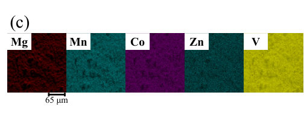
<figcaption class="paper-figure-caption"><b>Fig 1.</b> FIG. 1. Synchrotron XRD patterns of (Li0.2Mg0.2Mn0.2Co0.2Zn0.2)V2O4 and the results of Ri- etveld analysis assuming the cubic space group Fd¯3m: (a) 300 K and (b) 100 K. No peak splitting indicative of sym- metry lowering from the cubic spinel structure is observed down to 100 K. (c) SEM image and EDS elemental mapping of (Li0.2Mg0.2Mn0.2Co0.2Zn0.2)V2O4.</figcaption>
</figure>
<figure class="paper-figure-card">
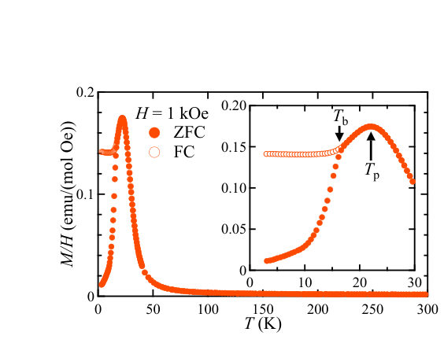
<figcaption class="paper-figure-caption"><b>Fig 2.</b> FIG. 3. Temperature dependence of the ZFC and FC mag- netization M(T) of (Li0.2Mg0.2Mn0.2Co0.2Zn0.2)V2O4 mea- sured under an applied field of 1 kOe. The inset shows an expanded view below 30 K. The values Tp and Tb represent the magnetization peak temperature and the ZFC-FC bifur- cation temperature, respectively.</figcaption>
</figure>
<figure class="paper-figure-card">
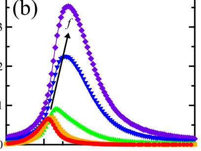
<figcaption class="paper-figure-caption"><b>Fig 3.</b> FIG. 5. Temperature dependence of the ac magnetic sus- ceptibility of (Li0.2Mg0.2Mn0.2Co0.2Zn0.2)V2O4 measured at several frequencies (1 Hz–1000 Hz) with ac excitation field of 2 Oe and zero dc magnetic field. (a) Real part χ′(T) and (b) imaginary part χ′′(T). The arrows indicate the trend with increasing frequency, showing the frequency-dependent shift of the peak temperatures Tf characteristic of glassy magnetic dynamics.</figcaption>
</figure>
<figure class="paper-figure-card">
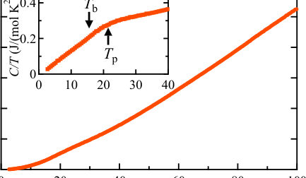
<figcaption class="paper-figure-caption"><b>Fig 4.</b> FIG. 4. Temperature dependence of the specific heat C(T) of (Li0.2Mg0.2Mn0.2Co0.2Zn0.2)V2O4 measured in zero magnetic field. The inset shows C/T below 40 K. No anomaly associ- ated with any phase transition is observed down to 3 K. The arrows indicate the magnetization peak temperature Tp and the ZFC-FC bifurcation temperature Tb shown in Fig. 3.</figcaption>
</figure>
<figure class="paper-figure-card">

<figcaption class="paper-figure-caption"><b>Fig 5.</b> Figure 3 depicts the temperature depen- dence of the dc magnetization M(T) for (Li0.2Mg0.2Mn0.2Co0.2Zn0.2)V2O4 measured under an applied magnetic field of 1 kOe. Upon cooling, the magnetization exhibits a ferrimagnetic-like increase be- low ∼50 K and a maximum at Tp ∼22 K. Upon further cooling, the zero-field-cooled (ZFC) and field-cooled (FC) magnetization curves bifurcate below Tb ∼17 K, as highlighted in the inset of Fig. 3. The ZFC magne- tization also exhibits a slight kink at approximately Tb. Figure 4 depicts the temperature dependence of the spe-</figcaption>
</figure>
</div>

<p><strong>Summary.</strong> This paper uses high-entropy spinel vanadates to study the competition between orbital ordering and disorder. Experimentally, they show that the random cation distribution suppresses long-range structural transitions associated with orbital order. Instead, the system settles into a complex, heterogeneous glassy magnetic state, highlighting the crucial role of quenched disorder in correlated oxides.</p>
<p><strong>Why it may be interesting.</strong> The work provides experimental evidence of how quenched structural disorder can fundamentally alter the ground state by suppressing collective orbital ordering, leading to complex, frustrated magnetic dynamics relevant to correlated electron physics.</p>
<details>
<summary>Detailed structure</summary>
<p><strong>Main problem.</strong> The study investigates how high configurational disorder influences the interplay between orbital degrees of freedom, geometrical frustration, and magnetic ordering in spinel vanadates.</p>
<p><strong>Main result.</strong> High entropy suppresses long-range orbital ordering, preventing structural symmetry lowering, while simultaneously stabilizing a heterogeneous glassy magnetic state characterized by complex relaxation dynamics.</p>
<p><strong>Method.</strong> The research combines structural characterization using X-ray diffraction with detailed thermodynamic and magnetic measurements (AC/DC susceptibility, specific heat).</p>
<p><strong>Model / system.</strong> The physical system is the high-entropy spinel vanadate $(	ext{Li}_{0.2}	ext{Mg}_{0.2}	ext{Mn}_{0.2}	ext{Co}_{0.2}	ext{Zn}_{0.2})	ext{V}_2	ext{O}_4$, where V ions form a geometrically frustrated pyrochlore sublattice.</p>
<p><strong>Key observables.</strong> Structural symmetry (absence of peak splitting), magnetic susceptibility ($\chi'$ and $\chi''$), specific heat anomalies, and relaxation dynamics analyzed via Cole-Cole plots.</p>
<p><strong>Important parameters / regimes.</strong> Temperature regimes (down to 3 K), disorder concentration (high entropy), and characteristic freezing temperatures ($T_f \sim 17-22$ K).</p>
<p><strong>Assumptions / limitations.</strong> The analysis assumes that the observed glassy dynamics are due to a spatially nonuniform spin-orbital state induced by random A-site cation distribution.</p>
<p><strong>Figures summary.</strong> Figures show preserved cubic XRD structure down to low temperatures, ZFC/FC magnetic bifurcation below $\sim 17$ K, and AC susceptibility plots demonstrating frequency-dependent relaxation indicative of glassy dynamics.</p>
<p><strong>Paper structure.</strong> The paper proceeds by first establishing the structural stability (XRD) contrasting with orbital ordering expectations. It then measures bulk magnetism (M(T), C(T)) to rule out conventional long-range order, culminating in detailed AC susceptibility analysis using multiple models (Vogel–Fulcher, dynamic scaling) to characterize the glassy state.</p>
</details>
<details>
<summary>Abstract</summary>
<p>High-entropy oxides provide a unique platform for exploring the interplay between configurational disorder and correlated electronic states. We report on structural, thermodynamic, and magnetic properties of the high-entropy spinel vanadate (Li$_{0.2}$Mg$_{0.2}$Mn$_{0.2}$Co$_{0.2}$Zn$_{0.2}$)V$_2$O$_4$, in which orbital-active V ions occupy the pyrochlore sublattice. X-ray diffraction measurements reveal that the cubic spinel structure is preserved at temperatures down to 5 K without any detectable symmetry lowering. Unlike conventional spinel vanadates exhibiting a symmetry-lowering structural transition driven by orbital ordering, the compound that we study exhibits a suppression of long-range orbital ordering in the high-entropy state. Magnetic susceptibility measurements show glassy magnetic freezing at temperatures below $\sim$20 K, while specific-heat measurements reveal no anomaly associated with long-range ordering down to 3 K. Frequency-dependent ac susceptibility reveals pronounced glassy dynamics. Analyses based on the Mydosh parameter, dynamic scaling law, and Vogel--Fulcher law suggest an intermediate dynamical regime between canonical spin-glass and cluster-glass behavior. Furthermore, Cole--Cole analyses reveal systematic deviations from a single Debye relaxation process, indicating the presence of heterogeneous magnetic relaxation dynamics near the freezing regime. Our results demonstrate that, in a frustrated spinel vanadate, high configurational entropy suppresses long-range orbital ordering and stabilizes a heterogeneous glassy magnetic state, highlighting the combined roles of geometrical frustration, orbital degrees of freedom, and configurational disorder in high-entropy magnets.</p>
</details>
<p><sub><a href="#top">↑ back to top</a></sub></p>

<p><a id="paper-2608.06555"></a></p>
<h3 id="temperature-tunable-spin-wave-refraction-using-superconducting-control-elements"><a href="http://arxiv.org/abs/2608.06555v1">Temperature-tunable spin-wave refraction using superconducting control elements</a></h3>
<p><strong>Authors:</strong> Pim H. Vree, Merel A. Bouma, Michael Borst, Tomas T. Osterholt, Rembert A. Duine, Toeno van der Sar<br>
<strong>Type:</strong> experiment · <strong>Category:</strong> other · <strong>PDF:</strong> <a href="https://arxiv.org/pdf/2608.06555v1">https://arxiv.org/pdf/2608.06555v1</a><br>
<strong>Analysis basis:</strong> full PDF text, analyzed in chunks
<strong>Topic relevance:</strong> <code>exotic spin models in light-matter</code> <strong>3/5</strong> · <code>spintronics-quantum-optics interface</code> <strong>3/5</strong> · <code>QC/QI experiment</code> <strong>2/5</strong> · <code>analog quantum simulation</code> <strong>1/5</strong> · <code>driven-dissipative phase transition</code> <strong>1/5</strong> · <code>interference shaping light</code> <strong>1/5</strong></p>
<div class="figure-strip-hint">↔ Scroll figures horizontally</div>
<div class="paper-figures-scroll">
<figure class="paper-figure-card">
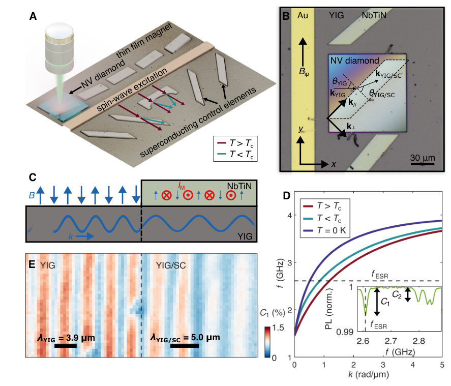
<figcaption class="paper-figure-caption"><b>Fig 1.</b> FIG. 1. Magnetic imaging of spin waves interacting with superconducting control elements. (A) Schematic of the experiment. Spin waves in a 0.20 µm-thick YIG magnetic film interact with 0.15-µm-thick NbTiN islands. A 0.15 µm-thick gold microstrip excites the spin waves. A nitrogen-vacancy (NV) diamond enables spin-wave imaging. Tc: superconducting critical temperature. (B) Optical micrograph of a ∼5-µm-thick diamond micromembrane containing NV spins implanted 70 nm below its bottom surface, placed onto a NbTiN island at 45 deg. w.r.t. the microstrip. The incoming (refracted) spin wave has a wave vector kYIG (kYIG/SC) making an angle θYIG (θYIG/SC) w.r.t. the interface normal. The applied...</figcaption>
</figure>
<figure class="paper-figure-card">
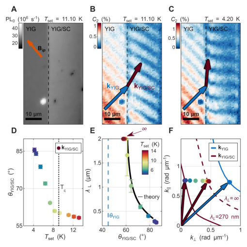
<figcaption class="paper-figure-caption"><b>Fig 2.</b> FIG. 2. Temperature-controlled, superconductor- induced spin-wave refraction. (A) Spatial map of NV photoluminescence (PL0) showing the YIG and NbTiN- covered-YIG (YIG/SC) regions of the device in Fig. 1B. We rotated the image by 45 deg. with respect to Fig. 1B to orient the interface vertically. (B, C) Spatial maps of NV ESR con- trast with the NbTiN in the normal (B) and superconducting (C) state. A blue (red) arrow indicates the incoming (re- fracted) wave vector extracted via Fourier analysis (fig. S1). Bip = 13 mT, fESR = 2.75 GHz. (D) Angle of the refracted spin wave θYIG/SC versus setpoint temperature Tset. Dashed line: independently measured NbTiN critical temperature Tc (fig. S4)....</figcaption>
</figure>
<figure class="paper-figure-card">
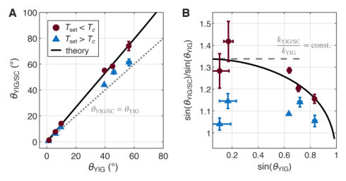
<figcaption class="paper-figure-caption"><b>Fig 3.</b> FIG. 3. Refractive index and Snell’s law. (A) Angle θYIG/SC of the refracted wave vector vs angle of the incident wave vector θYIG, measured above Tc (blue dots) and below (red dots). The waves break away from the interface normal (θYIG/SC &gt; θYIG). The dashed line indicates θYIG = θYIG/SC. Each incident angle corresponds to a superconducting island oriented at that angle w.r.t. the microstrip (Fig. 1A). Angles extracted by Fourier transformation of spatial spin-wave maps as in Fig. 2. See figures S10–15 for all spatial maps. Bip = 8.0 mT, fESR = 2.603 GHz. As in Fig. 2A, we observe a small refraction above Tc attributed to a NbTiN-deposition- induced anisotropy. (B) Ratio of the sines of...</figcaption>
</figure>
<figure class="paper-figure-card">

<figcaption class="paper-figure-caption"><b>Fig 4.</b> Fig. 2F and fig. S2) [41] that derive from the anisotropic dipolar fields generated by the spins in the film. Such hyperbolic dispersions lead to large angles between the phase and group velocities and are of interest in optics [42] as they enable phenomena such as negative refrac- tion, hyper-focusing and ways to control wave transport that are absent in systems with isotropic dispersions [43]. Here we demonstrate that our superconducting con- trol elements enable tuning the spin-wave refraction from positive to negative. We focus on the same device as in Fig. 2/Fig. 1B and change the wavelength of the im- pingent spin wave by changing the excitation frequency. To retain resonance with the...</figcaption>
</figure>
<figure class="paper-figure-card">
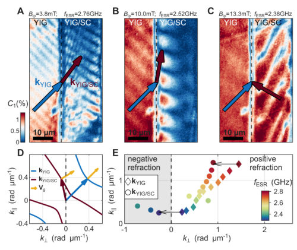
<figcaption class="paper-figure-caption"><b>Fig 5.</b> FIG. 4. Positive-to-negative refraction by a supercon- ducting island. (A–C) Spatial maps of the NV ESR con- trast at different drive frequencies. Reducing the frequency (from A to C) causes stronger refraction and the perpendic- ular component of the wave vector to change sign in C. To retain resonance with the NV frequency, we simultaneously tune the applied magnetic field. Tset = 4.4 K. (D) Geometric analysis of the refraction in k-space. Both before and after refraction, the wave vector must lie on the isofrequency con- tour of the spin-wave dispersion (blue line for bare YIG and red line for YIG/SC, calculated for the field and frequency of (C) and λL = 0.4 µm). The conservation of the...</figcaption>
</figure>
</div>

<p><strong>Summary.</strong> The research reports on the use of superconducting elements to actively control spin-wave propagation within a YIG thin film. By tuning the local magnetic environment via superconductivity, the authors achieved temperature-tunable refraction and even negative refraction for spin waves. This opens pathways for developing novel microwave optical components for quantum or classical information processing.</p>
<p><strong>Why it may be interesting.</strong> This work demonstrates using superconductivity to engineer wave properties (refraction/dispersion) in classical magnetic systems, which has parallels with controlling photonic or magnonic modes in quantum devices.</p>
<details>
<summary>Detailed structure</summary>
<p><strong>Main problem.</strong> The central challenge addressed is achieving low-damping, tunable control of spin-wave propagation, specifically realizing temperature-controlled refraction.</p>
<p><strong>Main result.</strong> The study successfully demonstrated temperature-tunable spin-wave refraction and the observation of negative refraction using superconducting elements integrated into a thin-film magnetic insulator structure.</p>
<p><strong>Method.</strong> Measurements involve exciting spin waves in YIG films and imaging their propagation characteristics (refraction, phase front shaping) using Nitrogen-Vacancy (NV) centers in diamond micromembranes as a sensitive detector.</p>
<p><strong>Model / system.</strong> The physical system is a thin-film magnetic insulator (YIG) coupled with superconducting control elements (NbTiN). The theoretical analysis models the superconductor's diamagnetic screening effect, which modifies the spin-wave dispersion relation based on the temperature-dependent London penetration depth.</p>
<p><strong>Key observables.</strong> Spin wave refractive index, refraction angle ($    heta_{  ext{YIG/SC}}$), and the superconducting London penetration depth ($\lambda_L$).</p>
<p><strong>Important parameters / regimes.</strong> Temperature ($T$), magnetic field components ($\mathbf{B}_{	ext{ip}}$), excitation frequency ($f_{	ext{ESR}}$), and interface angles.</p>
<p><strong>Assumptions / limitations.</strong> The small refraction observed above the superconducting critical temperature ($T_c$) is attributed to strain or damage-related anisotropy induced by deposition, rather than solely the superconducting effect.</p>
<p><strong>Figures summary.</strong> Figures illustrate schematic setups (YIG/SC/NV), temperature dependence of refraction angles vs. setpoint temperature, and spatial maps showing phase front shaping and negative refraction regimes.</p>
<p><strong>Paper structure.</strong> The paper systematically presents experimental measurements across various interface angles and temperatures, first demonstrating basic refraction, then quantifying the superconducting influence on dispersion ($\lambda_L$), and finally showcasing advanced control like negative refraction and beam translation.</p>
</details>
<details>
<summary>Abstract</summary>
<p>Spin waves are promising signal carriers for microwave control at the micrometer scale. However, realizing low-damping, tunable control of spin-wave propagation remains a central challenge. Here we use magnetic shielding by superconducting control elements to tune the local spin-wave dispersion and realize temperature-controlled refraction of spin waves in a thin-film magnetic insulator. Using magnetic imaging based on spins in diamond, we characterize the refractive index and demonstrate both positive and negative refraction as well as wavefront shaping by the superconductors. The observed refraction is explained by a geometrical analysis of the superconductivity-induced modification of the hyperbolic spin-wave dispersion. Our results demonstrate that superconductors enable tunable spin-wave optical elements, opening new opportunities for microwave control in classical or quantum information devices.</p>
</details>
<p><sub><a href="#top">↑ back to top</a></sub></p>

<p><a id="paper-2608.07322"></a></p>
<h3 id="entwined-lattice-of-atoms-and-anionic-electrons-in-layered-electride-lacl"><a href="http://arxiv.org/abs/2608.07322v1">Entwined lattice of atoms and anionic electrons in layered electride LaCl</a></h3>
<p><strong>Authors:</strong> Songyuan Geng, Xin Wang, Jianqi Zhong, Risi Guo, Fangjie Chen, Qun Wang, Kangjie Li, Keyu An, Teng-Fei Ying, Chen Qiu, Hanpu Liang, Zhengtai Liu, Mao Ye, Sungsoo Hahn, Balasubramanian Thiagarajan, Benjamin T. Zhou, Haoxiang Li<br>
<strong>Type:</strong> both · <strong>Category:</strong> strongly correlated electrons · <strong>PDF:</strong> <a href="https://arxiv.org/pdf/2608.07322v1">https://arxiv.org/pdf/2608.07322v1</a><br>
<strong>Analysis basis:</strong> full PDF text, analyzed in chunks
<strong>Topic relevance:</strong> <code>analog quantum simulation</code> <strong>3/5</strong> · <code>driven-dissipative phase transition</code> <strong>2/5</strong> · <code>Keldysh / 2PI / non-Gaussian methods</code> <strong>1/5</strong> · <code>Kondo &amp; dissipative impurity</code> <strong>1/5</strong> · <code>entanglement &amp; information structure</code> <strong>1/5</strong> · <code>methods for driven-dissipative</code> <strong>1/5</strong> · <code>non-equilibrium dynamics</code> <strong>1/5</strong></p>
<div class="figure-strip-hint">↔ Scroll figures horizontally</div>
<div class="paper-figures-scroll">
<figure class="paper-figure-card">
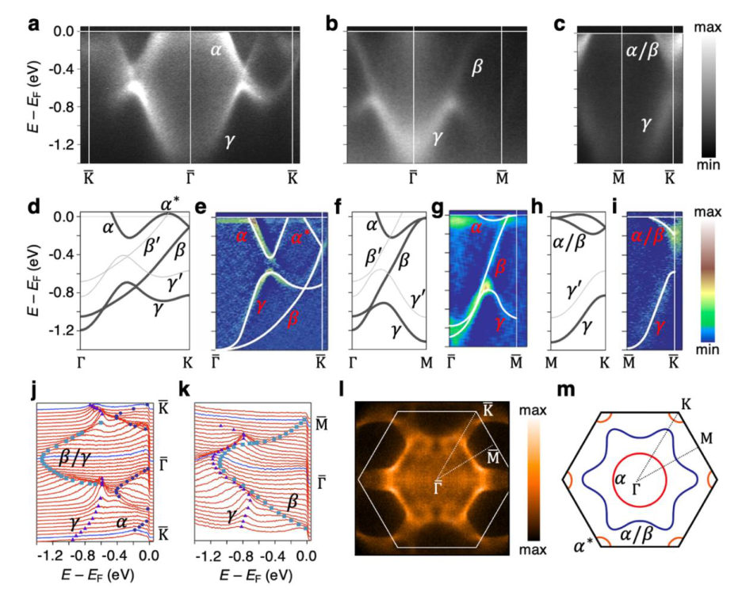
<figcaption class="paper-figure-caption"><b>Fig 1.</b> Fig. 2 Electronic structure of LaCl revealed by ARPES. a–c. ARPES spectra measured with</figcaption>
</figure>
<figure class="paper-figure-card">
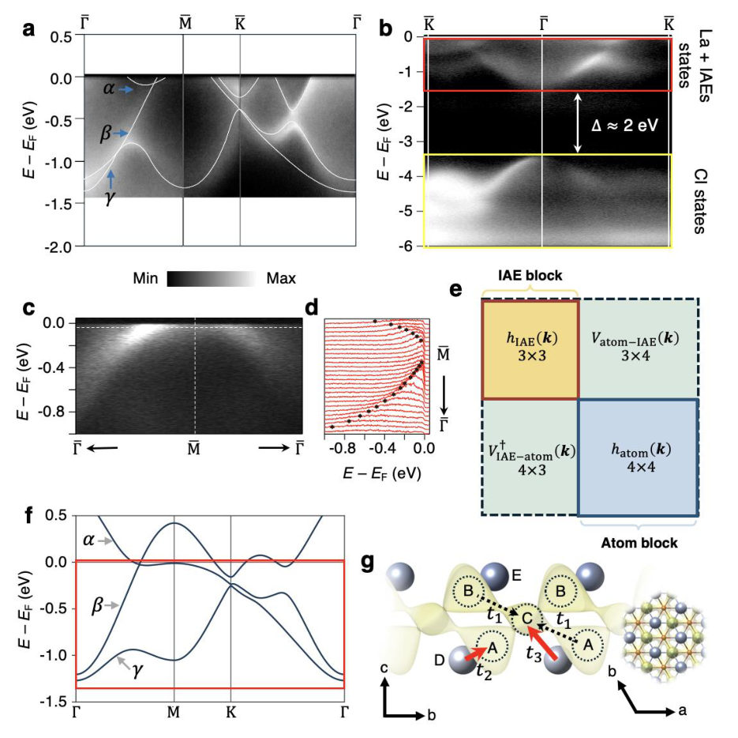
<figcaption class="paper-figure-caption"><b>Fig 2.</b> Fig. 3 The entwined lattice with strong coupling between the anionic electron sublattice and</figcaption>
</figure>
<figure class="paper-figure-card">
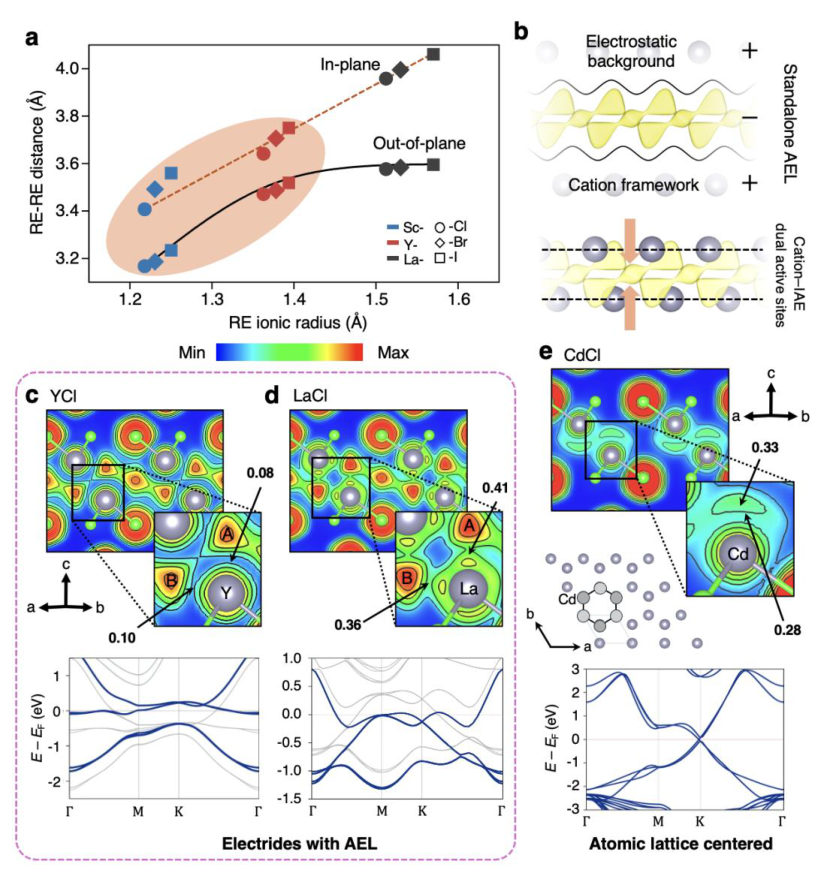
<figcaption class="paper-figure-caption"><b>Fig 3.</b> Fig. 4 Structural trend for the emergence of entwined lattices in the REX electride family. a.</figcaption>
</figure>
</div>

<p><strong>Summary.</strong> This work demonstrates that in layered electrides, the coupling between the anionic electron lattice (AEL) and the underlying metal cation framework dictates the electronic structure. By comparing YCl and LaCl, the authors show this coupling can fundamentally reshape band topology and connectivity, offering a powerful new knob for designing quantum materials.</p>
<p><strong>Why it may be interesting.</strong> The concept that an excess electron system can act as a tunable, reconfigurable degree of freedom to engineer band topology and geometry is highly relevant for designing novel quantum materials beyond conventional atomic constraints.</p>
<details>
<summary>Detailed structure</summary>
<p><strong>Main problem.</strong> The study investigates how controlling the lattice geometry, particularly through excess anionic electron layers (AELs), can actively dictate and reconstruct the electronic structure of crystalline solids.</p>
<p><strong>Main result.</strong> The coupling between the AEL and the atomic cation framework fundamentally changes the effective lattice connectivity, transforming the electronic bands from a flat-band dice-lattice structure ($    ext{YCl}$) to a dispersive, reconstructed state ($ ext{LaCl}$).</p>
<p><strong>Method.</strong> The research combines Angle-Resolved Photoemission Spectroscopy (ARPES) measurements with theoretical modeling using tight-binding Hamiltonians and DFT calculations.</p>
<p><strong>Model / system.</strong> The system involves layered electrides ($   ext{RECl}$), comparing the 'standalone AEL' regime ($    ext{YCl}$) to the 'entwined lattice' regime ($ ext{LaCl}$). The electronic structure is governed by hopping channels between the excess electrons and the cation sites.</p>
<p><strong>Key observables.</strong> Electronic band dispersion, Chern band topology ($|C|$), presence/absence of flat bands, and Van Hove singularities (vHS).</p>
<p><strong>Important parameters / regimes.</strong> Interlayer separation distance, degree of coupling between AEL and atomic lattice, and the specific cation element ($   ext{Y}$ vs. $   ext{La}$).</p>
<p><strong>Assumptions / limitations.</strong> The analysis assumes that the electronic structure is highly sensitive to the hybridization strength between the anionic electron layer and the underlying atomic framework.</p>
<p><strong>Figures summary.</strong> Figures compare the standalone AEL in YCl versus the entwined lattice in LaCl, showing structural differences and band reconstructions. Another figure illustrates the general trend of crossover from standalone AEL to entwined lattices across the REX family.</p>
<p><strong>Paper structure.</strong> The paper establishes the theoretical framework by contrasting $   ext{YCl}$ (standalone AEL) with $   ext{LaCl}$ (entwined lattice), using ARPES and tight-binding models to pinpoint the activation of direct hopping channels as the cause for the qualitative electronic divergence.</p>
</details>
<details>
<summary>Abstract</summary>
<p>Controlling the lattice geometry that governs electronic structure is a central theme in condensed-matter physics, yet in crystalline solids this geometry is usually fixed by the atomic framework. Electrides offer an alternative route to electronic structure design in which their excess electrons can organize into anionic electron lattice (AEL) and provide a lattice-like degree of freedom. Recent work has highlighted the standalone limit, where the AEL in YCl yields bands well described by the dice-lattice model. Here, using angle-resolved photoemission spectroscopy (ARPES), we show that LaCl, although isostructural to YCl, realizes a qualitatively different regime where the AEL is entwined with the La cation framework, producing a fully reconstructed electronic structure. Combining the ARPES result with tight-binding model analysis, we demonstrate that this radical divergence stems from the activation of direct hopping channels between the AEL and the La atomic lattice. This coupling reshapes the effective lattice geometry, reconstructs the electronic states, and modifies the associated Chern band topology, transforming the bipartite dice-lattice network in YCl into a tripartite structure in LaCl. Our findings demonstrate that the coupling between the AEL and the atomic lattice can actively shape the effective lattice geometry that governs the electronic structure. This coupling can act as a powerful tuning knob for electronic structure design that is inaccessible in conventional materials.</p>
</details>
<p><sub><a href="#top">↑ back to top</a></sub></p>

<p><a id="paper-2608.07219"></a></p>
<h3 id="origin-of-long-lived-nuclear-spin-states-and-coherences-in-aliphatic-chains-revealed-by-relaxation-theory"><a href="http://arxiv.org/abs/2608.07219v1">Origin of Long-Lived Nuclear Spin States and Coherences in Aliphatic Chains Revealed by Relaxation Theory</a></h3>
<p><strong>Authors:</strong> Danil A. Markelov, Kirill F. Sheberstov<br>
<strong>Type:</strong> theory · <strong>Category:</strong> other · <strong>PDF:</strong> <a href="https://arxiv.org/pdf/2608.07219v1">https://arxiv.org/pdf/2608.07219v1</a><br>
<strong>Analysis basis:</strong> full PDF text, analyzed in chunks
<strong>Topic relevance:</strong> <code>correlated / nonlocal dissipation</code> <strong>3/5</strong> · <code>methods for driven-dissipative</code> <strong>3/5</strong> · <code>non-equilibrium dynamics</code> <strong>2/5</strong> · <code>Keldysh / 2PI / non-Gaussian methods</code> <strong>1/5</strong> · <code>driven-dissipative phase transition</code> <strong>1/5</strong></p>
<div class="figure-strip-hint">↔ Scroll figures horizontally</div>
<div class="paper-figures-scroll">
<figure class="paper-figure-card">
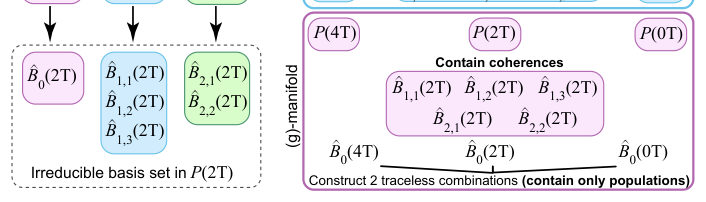
<figcaption class="paper-figure-caption"><b>Fig 1.</b> FIG. 1. Schematic representation of the construction of long-lived operators (LLOs) in aliphatic spin chains. (a) The local LLO subspace of a single −CH2−group is spanned by two basis operators, ˆP(S0) and ˆP(T). (b) An operator corresponding to an LLO in an aliphatic spin chain containing N −CH2−groups is constructed as a product of either ˆP(S0) or ˆP(T) within each group. (c) These products are classified according to the number of triplet populations T they contain, thereby defining the triplet-number subspaces P(MT). (d) Within each triplet-number manifold P(MT), the operator basis is further decomposed into permutation-adapted components described by Young diagrams. (e) Example of the...</figcaption>
</figure>
<figure class="paper-figure-card">
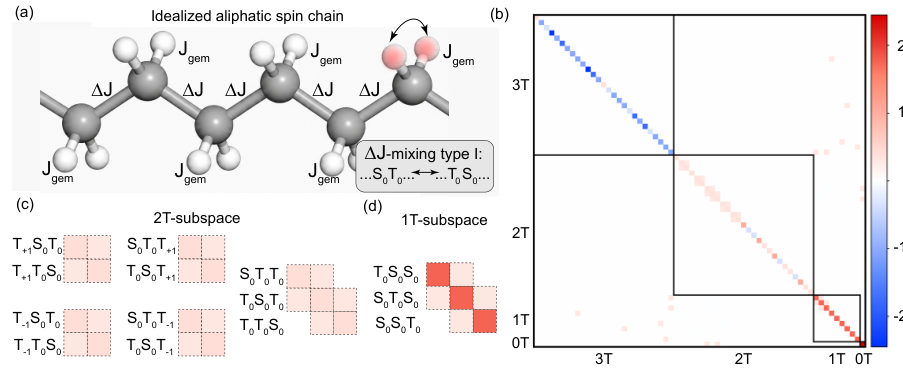
<figcaption class="paper-figure-caption"><b>Fig 2.</b> FIG. 2. (a) Fragment of an aliphatic chain highlighting the two most important interactions in the system: Jgem denotes the geminal intra-pair coupling, whereas ∆J denotes the difference between the vicinal couplings to neighboring groups. In an idealized chain, both Jgem and ∆J are assumed to be uniform along the chain. (b) The matrix elements of the Hamiltonian HJ</figcaption>
</figure>
</div>

<p><strong>Summary.</strong> The paper theoretically derives the existence and structure of long-lived nuclear spin states and coherences in aliphatic chains using Redfield relaxation theory. By identifying operators annihilated by the dominant dipole–dipole interaction, it provides a general framework to predict these protected quantum modes. This is crucial for applications ranging from hyperpolarization storage to quantum information processing.</p>
<p><strong>Why it may be interesting.</strong> This work provides a rigorous theoretical framework linking fundamental relaxation theory (Redfield) to observable quantum phenomena (LLCs/LLSs) in molecular spin systems, which is highly relevant for understanding coherence preservation in complex biological or chemical environments.</p>
<details>
<summary>Detailed structure</summary>
<p><strong>Main problem.</strong> The primary goal is determining the fundamental origin and general structure of delocalized long-lived states (LLSs) and collective zero-quantum long-lived coherences (LLCs) in aliphatic spin chains.</p>
<p><strong>Main result.</strong> These protected modes are shown to arise directly from Redfield relaxation theory by finding operators annihilated by the dominant intra-pair dipole–dipole relaxation superoperator. The accessible number of such independent non-trivial operators depends on molecular chirality.</p>
<p><strong>Method.</strong> The authors employ Redfield relaxation theory, constructing and analyzing the zero-eigenvalue subspace of the relaxation superoperator associated with the intra-pair dipole–dipole interaction.</p>
<p><strong>Model / system.</strong> The system is an aliphatic spin chain composed of $N$ methylene groups ($-	ext{CH}_2-$). The analysis uses spin operators for pairs of spins and models the dynamics via the relaxation superoperator $\hat{\mathcal{R}}_{\text{intra}}$.</p>
<p><strong>Key observables.</strong> Long-lived states (LLSs) and long-lived coherences (LLCs), which are characterized by their extended lifetimes exceeding conventional $T_1$ and $T_2$ times.</p>
<p><strong>Important parameters / regimes.</strong> The number of methylene groups, $N$; the nature of the molecule (achiral vs. chiral); and the dominant relaxation mechanism (intra-pair dipole–dipole interaction).</p>
<p><strong>Assumptions / limitations.</strong> Cross-correlations between different dipole–dipole interaction sites are neglected due to rapid averaging from fast molecular rotation.</p>
<p><strong>Figures summary.</strong> Figures schematically illustrate the local LLO subspace, the construction of collective LLOs via product operators ($\prod \hat{P}(X)$), and the classification of these products into parity-defined subspaces ($P(MT)$).</p>
<p><strong>Paper structure.</strong> The paper progresses from defining the physical problem (LLSs/LLCs) to applying Redfield theory, deriving the mathematical condition for protection ($\hat{\mathcal{T}}^{(2)}_{2,m} \hat{L} = 0$), establishing the combinatorial structure of the zero-eigenvalue space ($2^N-1$ operators), and finally developing explicit construction methods using population projectors.</p>
</details>
<details>
<summary>Abstract</summary>
<p>Delocalized long-lived states (LLSs) and collective zero-quantum long-lived coherences (LLCs) in aliphatic chains provide a promising route for preserving nuclear spin order with lifetimes that exceed the conventional $T_1$ and $T_2$ relaxation times, respectively. Their extended lifetimes make them attractive for applications including hyperpolarization storage, ligand-observed drug screening based on the loss of longevity upon binding to a target protein, and quantum information processing exploiting the collective properties of many-body spin systems. Although LLSs and LLCs have been observed experimentally in methylene networks, their origin and general structure in chains of arbitrary length have remained unclear. Here we show that these relaxation-protected modes follow directly from Redfield relaxation theory. Specifically, we construct the long-lived subspace, i.e., the zero-eigenvalue subspace of the relaxation superoperator associated with the dominant intra-pair dipole--dipole relaxation mechanism. The long-lived subspace contains $2^N-1$ independent non-trivial operators, which excludes the identity operator, where $N>1$ is the number of $-\mathrm{CH}_2-$ groups in the chain. In achiral molecules, conservation of the global intra-pair permutation parity restricts experimental access to at most $2^N-2$ of these operators, whereas in chiral molecules this parity is not conserved, making up to $2^N-1$ long-lived operators accessible. We further develop a general framework for constructing both LLSs and LLCs in aliphatic chains containing an arbitrary number of $-\mathrm{CH}_2-$ groups in achiral molecules, and illustrate the approach explicitly for chains with $N=2$, 3, and 4 methylene groups.</p>
</details>
<p><sub><a href="#top">↑ back to top</a></sub></p>

<p><a id="paper-2608.07163"></a></p>
<h3 id="rate-fidelity-control-for-wide-area-quantum-links"><a href="http://arxiv.org/abs/2608.07163v1">Rate-Fidelity Control for Wide-Area Quantum Links</a></h3>
<p><strong>Authors:</strong> Connor Clayton, Cory Nunn, Quinn Carmack, Wayne McKenzie, Anne Marie Richards, Xiaodi Wu, Bobby Bhattacharjee<br>
<strong>Type:</strong> both · <strong>Category:</strong> quantum information and computing · <strong>PDF:</strong> <a href="https://arxiv.org/pdf/2608.07163v1">https://arxiv.org/pdf/2608.07163v1</a><br>
<strong>Analysis basis:</strong> full PDF text, analyzed in chunks
<strong>Topic relevance:</strong> <code>quantum optics experiment</code> <strong>3/5</strong> · <code>quantum measurements</code> <strong>2/5</strong> · <code>correlated / nonlocal dissipation</code> <strong>1/5</strong> · <code>driven-dissipative phase transition</code> <strong>1/5</strong> · <code>entanglement &amp; information structure</code> <strong>1/5</strong> · <code>methods for driven-dissipative</code> <strong>1/5</strong> · <code>non-equilibrium dynamics</code> <strong>1/5</strong></p>
<div class="figure-strip-hint">↔ Scroll figures horizontally</div>
<div class="paper-figures-scroll">
<figure class="paper-figure-card">
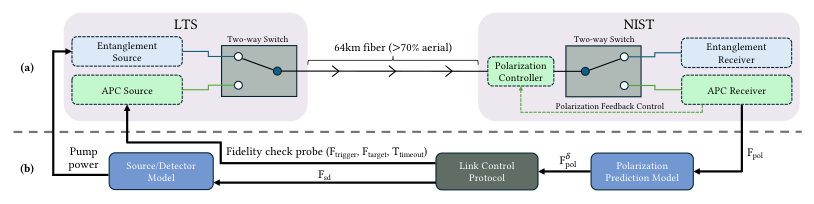
<figcaption class="paper-figure-caption"><b>Fig 1.</b> Fig. 1. (a) Schematic of our quantum link. Entanglement generation and automated polarization compensation (APC) signals are time multiplexed. Measurements at the APC receiver inform corrections at the polarization controller. (b) Feedback loop used for link control. Polarization fidelity (𝐹pol) measured by the APC acts as input to the link control protocol and its associated models, which in turn determine hardware parameters at the source site.</figcaption>
</figure>
<figure class="paper-figure-card">
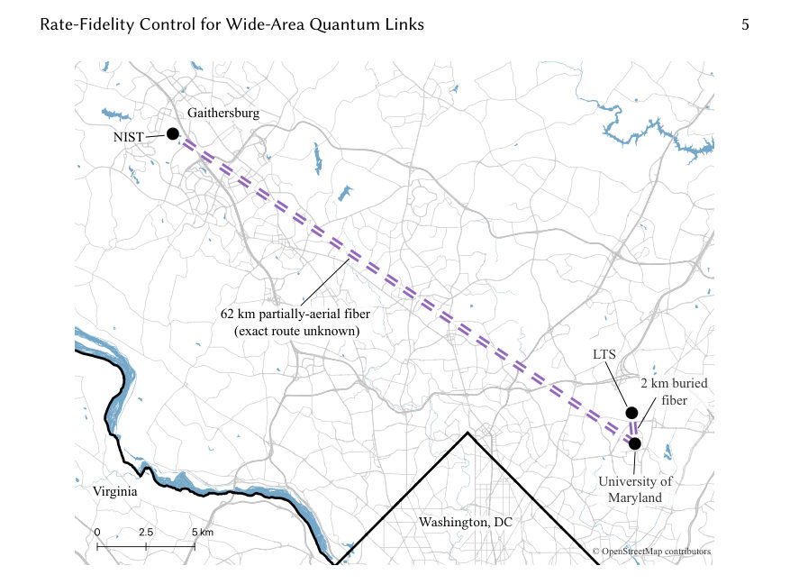
<figcaption class="paper-figure-caption"><b>Fig 2.</b> Fig. 2. Metropolitan context of the 64km deployed fiber link, part of the Washington DC metropolitan quantum network (DC-QNet). The source is located at the Laboratory for Telecommunication Sciences (LTS) in College Park, MD, USA. The route passes through a switch at the University of Maryland, then continues through a 62km partially-aerial fiber to the National Institute of Standards and Technology (NIST) in Gaithersburg, MD, USA. The exact routes of these two fibers are not known and therefore sketched as straight dashed lines.</figcaption>
</figure>
<figure class="paper-figure-card">
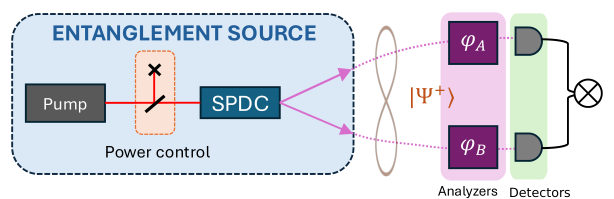
<figcaption class="paper-figure-caption"><b>Fig 3.</b> Fig. 3. Schematic of experimental setup used to characterize SPDC entanglement source and receiver with controllable pump laser power. A complete diagram and its description can be found in Appendix A.</figcaption>
</figure>
<figure class="paper-figure-card">
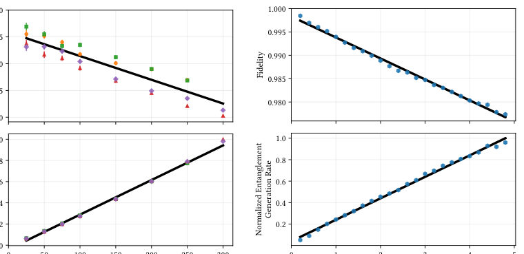
<figcaption class="paper-figure-caption"><b>Fig 4.</b> Fig. 4. Controllable rate-fidelity tradeoffs across two entanglement source technologies. In both sources, increasing pump power increases entanglement generation rate but reduces entanglement fidelity. The simulations in this paper use the SPDC characterization in (a).</figcaption>
</figure>
<figure class="paper-figure-card">
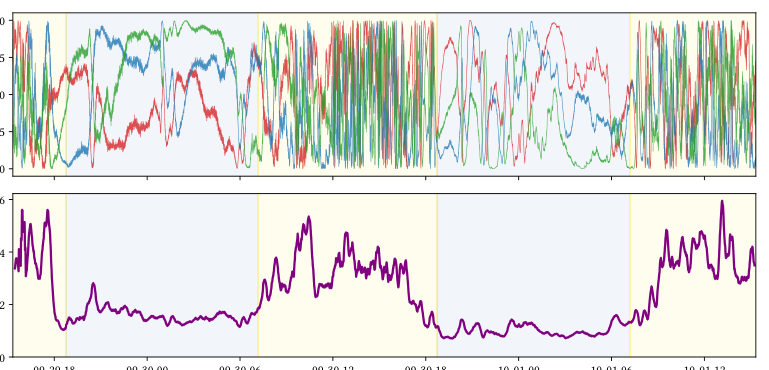
<figcaption class="paper-figure-caption"><b>Fig 5.</b> Fig. 5. Measured polarization drift over 48 hours on a 64km fiber link. The top figure shows the evolution of raw Stokes parameters over time; the bottom plot shows the calculated drift rate averaged over 15 minute intervals. On average, drift is significantly higher during the day.</figcaption>
</figure>
</div>

<p><strong>Summary.</strong> This paper introduces an adaptive control protocol designed to optimize entanglement distribution rates over long-haul quantum fiber links plagued by polarization drift. By treating the problem as a joint optimization of rate versus fidelity, the authors developed a software controller that dynamically adjusts source power and compensation timing. This approach significantly boosts performance in near-term quantum networks without requiring new physical hardware.</p>
<p><strong>Why it may be interesting.</strong> This work provides a practical, software-defined solution for mitigating environmental decoherence in quantum networks, which is highly relevant to open quantum systems and quantum optics research concerning physical implementation challenges.</p>
<details>
<summary>Detailed structure</summary>
<p><strong>Main problem.</strong> The challenge is designing a control protocol for wide-area quantum links that maximizes entanglement distribution rate while ensuring the fidelity of transmitted quantum states remains above an application-specified threshold.</p>
<p><strong>Main result.</strong> An adaptive, software-based controller was developed that improved the mean entanglement distribution rate by 14% over a 24-hour trace compared to optimized static policies.</p>
<p><strong>Method.</strong> The authors formulated the problem as a joint control optimization over tunable source parameters (pump power) and polarization compensation timing, using trace-driven simulations based on real fiber data.</p>
<p><strong>Model / system.</strong> The system models quantum communication over wide-area optical fiber links suffering from time-varying polarization drift. The control mechanism dynamically adjusts the entanglement source's pump power and applies polarization corrections to maintain high fidelity.</p>
<p><strong>Key observables.</strong> Entanglement distribution rate, State Fidelity (F), Polarization State of Polarization (SOP).</p>
<p><strong>Important parameters / regimes.</strong> 64 km deployed optical fiber length; minimum required fidelity threshold ($ ext{F}_{    ext{target}}$); pump laser power settings.</p>
<p><strong>Assumptions / limitations.</strong> The control protocol assumes that the link degradation can be modeled or predicted sufficiently well to guide adaptive adjustments, and it relies on classical processing rather than new quantum hardware.</p>
<p><strong>Figures summary.</strong> Figures illustrate the schematic of the quantum link setup involving entanglement generation and polarization compensation measurements, the metropolitan context of the 64km fiber link, and rate-fidelity trade-offs for different sources.</p>
<p><strong>Paper structure.</strong> The paper progresses from defining the physical limitations (polarization drift) to formulating the problem as a joint control optimization. It then details the adaptive protocol construction, followed by rigorous evaluation using long-term trace simulations against static benchmarks.</p>
</details>
<details>
<summary>Abstract</summary>
<p>Quantum network links must distribute entanglement at high rates while satisfying application-specified fidelity demands. However, wide-area deployed fiber links suffer from polarization drift which destabilizes end-to-end fidelity and forces periodic compensation. Current deployments often use active stabilization with fixed control policies, and improvements generally stem from advances in quantum hardware. Meanwhile, software control remains relatively underexplored.   Here, we formulate quantum link operation as a joint control problem over tunable rate-fidelity tradeoffs and uncontrollable link drift. From this framework, we construct a link control protocol that dynamically adapts source pump power and polarization compensation to maximize entanglement distribution rate subject to a minimum fidelity constraint. We evaluate the protocol through trace-driven simulations driven by data from a 64 km deployed optical fiber. Compared with optimized static policies, our adaptive controller improves mean entanglement distribution rate by 14% over a 24 hour trace, without requiring any offline policy optimization. Our results show that software-based physical layer control can provide a practical mechanism for improving near-term quantum link performance without requiring additional quantum hardware.</p>
</details>
<p><sub><a href="#top">↑ back to top</a></sub></p>

<p><a id="paper-2608.06737"></a></p>
<h3 id="giant-exchange-driven-vectorial-control-of-a-minimal-topological-magnet-in-eu3in2as4"><a href="http://arxiv.org/abs/2608.06737v1">Giant-exchange-driven Vectorial Control of a Minimal Topological Magnet in Eu3In2As4</a></h3>
<p><strong>Authors:</strong> Haonan Chen, Xunkai Duan, Guangyi Wang, Yuhan Du, Huayao Li, Jiayu Wang, Wenbin Wu, Zixuan Xu, Yingchao Xia, Jiaming Gu, Pengliang Leng, Lin Miao, Fengfeng Zhu, Xiang Yuan, Tong Zhou, Cheng Zhang<br>
<strong>Type:</strong> both · <strong>Category:</strong> strongly correlated electrons · <strong>PDF:</strong> <a href="https://arxiv.org/pdf/2608.06737v1">https://arxiv.org/pdf/2608.06737v1</a><br>
<strong>Analysis basis:</strong> full PDF text, analyzed in chunks
<strong>Topic relevance:</strong> <code>exotic spin models in light-matter</code> <strong>3/5</strong> · <code>spintronics-quantum-optics interface</code> <strong>3/5</strong> · <code>analog quantum simulation</code> <strong>1/5</strong> · <code>driven-dissipative phase transition</code> <strong>1/5</strong> · <code>non-equilibrium dynamics</code> <strong>1/5</strong></p>
<div class="figure-strip-hint">↔ Scroll figures horizontally</div>
<div class="paper-figures-scroll">
<figure class="paper-figure-card">
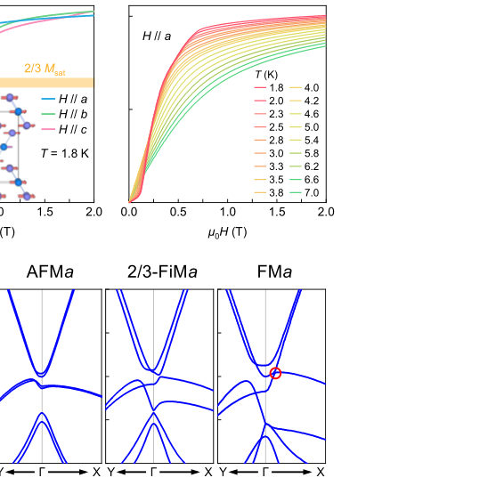
<figcaption class="paper-figure-caption"><b>Fig 1.</b> FIGURE 1. Crystal structure and magnetism of Eu3In2As4. a Schematic crystal structure of Eu3In2As4. The inequivalent Eu sublattices are represented by pur- ple and blue atoms b Magnetic structure of the C-type AFMa ground state, forming FM coupling along c-axis and AFM coupling within the ab-plane. For clarity, only Eu atoms are shown here. Colored arrows denote oppositely oriented spins, with the two Eu sublattices each forming AFM structures. c Temperature dependence of magnetic susceptibility measured under field-cooled (FC) conditions with an applied field of 50 Oe along the three principal crystallographic axes. d Field-dependent magnetization at 1.8 K with the field applied along...</figcaption>
</figure>
<figure class="paper-figure-card">
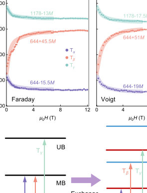
<figcaption class="paper-figure-caption"><b>Fig 2.</b> FIGURE 2. Magneto-infrared spectra of Eu3In2As4. a, b Stacked plots of relative magneto-reflectivity RB/R0 spectra (0.5 T step) measured in Faraday (H // a) and Voigt (H // c) geometries, respectively, with the infrared beam focused on the (100) plane. Three distinct sets of peak features, denoted Tα, Tβ, and Tγ, appear and evolve with the in- creasing field, and are respectively traced by violet, red and green curves. c, d False-color plots of the first derivative of relative magneto-reflectivity d(𝑅𝐵/𝑅0)/𝑑𝜔, in (c) Faraday and (d) Voigt configurations, respectively. e, f Correlation between magnetization and optical transition energies with Faraday and Voigt con- figurations in (e) and...</figcaption>
</figure>
<figure class="paper-figure-card">
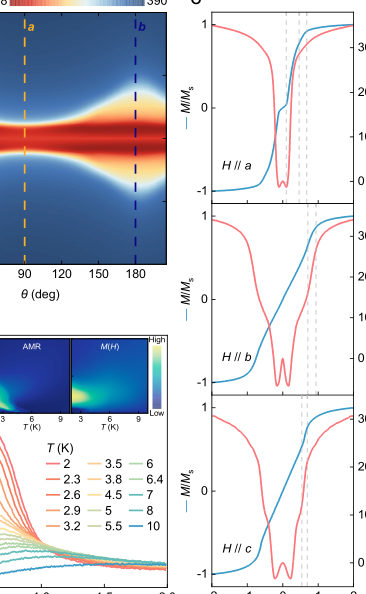
<figcaption class="paper-figure-caption"><b>Fig 3.</b> FIGURE 3. Anisotropic magneto-transport in the low-field regime. a Field dependence of the magneto-resistivity, ρxx(H), at 2 K. Current was applied along the c-axis while the field direction was rotated from the b- to a-axis by angle θ, as illustrated in the inset. b Color plot of the angular-dependent ρxx(θ, H), revealing ab-plane anisotropy.</figcaption>
</figure>
<figure class="paper-figure-card">
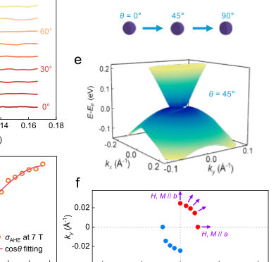
<figcaption class="paper-figure-caption"><b>Fig 4.</b> FIGURE 4. Shubnikov-de Haas (SdH) oscillations and anomalous Hall effect (AHE) in FM- Eu3In2As4. a Magneto-resistivity ρxx(H) at 2 K within ±12 T, with H rotated within ab-plane. Current was ap- plied along c-axis. The ρxx(H) curves are offset for clarity. Inset: Hall resistivity ρyx(H) at 0°, exhib- iting a nearly linear field dependence with negative slope, indicating electron conduction. Linear fitting of ρyx(H) in FM state yields an electron density of 2.1×1019 cm-3. b SdH oscillations Δρxx (obtained by polynomial fitting) as a function of 1/μ0H with varying field directions. c SdH oscillation frequencies (with error bars) versus field direction θ, showing weak angular de- pendence. The...</figcaption>
</figure>
<figure class="paper-figure-card">
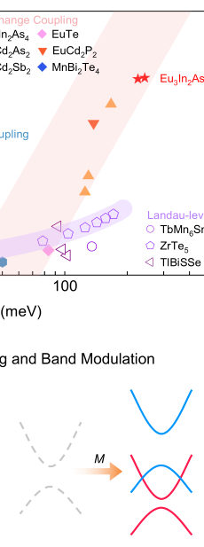
<figcaption class="paper-figure-caption"><b>Fig 5.</b> FIGURE 5. The superiority of Eu2+-based exchange coupling in comparison with other mech- anisms and its principle schematic. a Comparison of energy scales and effective average field slopes (ΔE/ΔB) across various modula- tion mechanisms: exchange coupling[23, 53–56], Zeeman effect[48, 50, 51, 103], magnetoelectric coupling[104], magnetic order transition[105], and Landau quantization[106–108]. b Illustration of the exchange coupling between localized spins and itinerant carriers. Purple balls refer to Eu2+ ions, and the electrons are illustrated as wave packet. The right panel demonstrates the M-induced exchange splitting and crossing, promoting the formation of Weyl points.</figcaption>
</figure>
</div>

<p><strong>Summary.</strong> This work establishes $    ext{Eu}_3   ext{In}_2   ext{As}_4$ as a model system where strong exchange coupling allows systematic tuning of topological phases via external magnetic fields. By combining advanced magnetometry, spectroscopy, and transport measurements, the authors map out transitions from an antiferromagnetic insulator to ferromagnetic states hosting Weyl nodes. This demonstrates that magnetism can be used as a powerful knob to control electronic band topology in condensed matter systems.</p>
<p><strong>Why it may be interesting.</strong> The strong coupling mechanism provides a clear pathway for using magnetism (a many-body phenomenon) to engineer and control exotic quantum band structures like Weyl semimetals, which is highly relevant for designing next-generation spintronic or topological electronic devices.</p>
<details>
<summary>Detailed structure</summary>
<p><strong>Main problem.</strong> The research aims to control quantum states of matter by integrating intrinsic magnetism with band topology, overcoming limitations posed by weak exchange coupling in existing materials.</p>
<p><strong>Main result.</strong> The material $ ext{Eu}_3   ext{In}_2   ext{As}_4$ exhibits a predictable sequence of magnetic phase transitions (AFM $
ightarrow 2/3$-FiMa $
ightarrow$ FM) driven by external fields, leading to topological phases like Weyl semimetals.</p>
<p><strong>Method.</strong> The study combines theoretical calculations (DFT with SOC) predicting band structures for different magnetic states with multiple experimental probes including magneto-transport ($
ho_{xx}$, AHE), magneto-infrared spectroscopy, and magnetization measurements.</p>
<p><strong>Model / system.</strong> The physical system is the topological magnet $ ext{Eu}_3   ext{In}_2   ext{As}_4$. The model relies on identifying a 'giant exchange coupling' that causes large, magnetization-dependent band shifts (up to 300 meV) across various magnetic phases.</p>
<p><strong>Key observables.</strong> Magnetization $M(H)$, anomalous Hall conductivity ($\sigma_{	ext{AHE}}$), magneto-infrared spectral features ($    ext{T}\alpha,   ext{T}eta,     ext{T}\gamma$), and Shubnikov-de Haas oscillation frequencies.</p>
<p><strong>Important parameters / regimes.</strong> Exchange coupling strength ($J_{	ext{ex}}$) leading to $\sim 300	ext{ meV}$ band shifts; critical magnetic fields required for phase transitions (e.g., $1	ext{ T}$); temperature dependence near Néel temperatures ($\sim 4.5	ext{ K}$).</p>
<p><strong>Assumptions / limitations.</strong> The analysis assumes that the observed electronic structure evolution and transport anomalies are directly governed by the strong, field-tunable exchange coupling mechanism.</p>
<p><strong>Figures summary.</strong> Figures detail structural characterization (XRD), magnetic phase diagrams mapping transitions between AFM, $2/3$-FiMa, and FM states; magneto-IR spectra show evolving optical transitions correlated with magnetization; transport measurements map out angular dependence of AHE and $ ext{SdH}$ oscillations.</p>
<p><strong>Paper structure.</strong> The paper systematically maps the magneto-topological phase diagram by first characterizing the magnetic ground state (AFM) via susceptibility and $M(H)$ curves. It then uses spectroscopy and transport to link field-induced magnetic transitions ($   ext{AFMa} 
ightarrow 2/3   ext{-FiMa} 
ightarrow   ext{FMa}$) to specific topological electronic states, culminating in the demonstration of Weyl node tuning.</p>
</details>
<details>
<summary>Abstract</summary>
<p>The interplay between magnetism and band topology provides a route to controlling quantum states of matter, yet its realization in materials is often constrained by weak exchange coupling and complex electronic structures. Here, a giant exchange coupling is identified in the newly predicted topological magnet Eu3In2As4, giving rise to magnetization-dependent band shifts of up to 300 meV. Together with its intrinsically soft magnetic response, this strong cou-pling enables systematic tuning of topological phases by both the magnitude and orientation of applied magnetic fields. The magneto-topological phase diagram is mapped out in which an antiferromagnetic topological insulator ground state evolves, under modest fields, into a pro-posed intermediate 2/3-ferrimagnetic phase, and further into fully polarized ferromagnetic states predicted to host either Weyl or nodal-ring semimetals. Notably, the Weyl phase corresponds to a minimal model hosting a single pair of Weyl nodes. Quantum oscillations, anomalous Hall transport and magneto-infrared spectroscopy consistently reveal exchange-driven band recon-struction across these transitions. Rotation of the magnetization theoretically provides an effi-cient means to tune the momentum-space positions and separations of the Weyl nodes. These results establish Eu3In2As4 as a model system for exploring how strong exchange coupling can be used to control topological band structures with minimal complexity.</p>
</details>
<p><sub><a href="#top">↑ back to top</a></sub></p>

<p><a id="paper-2608.07013"></a></p>
<h3 id="local-magnetic-properties-of-the-rare-earth-intermetallics-math319mathmnmath320mathgemath321math-math322mathce-pr-nd"><a href="http://arxiv.org/abs/2608.07013v1">Local magnetic properties of the rare-earth intermetallics $R$Mn$_2$Ge$_2$ ($R$=Ce, Pr, Nd)</a></h3>
<p><strong>Authors:</strong> N. P. Bentley, T. L. Breeze, A. Hernández-Melián, M. J. Pearce, T. J. Hicken, M. T. F. Telling, B. M. Huddart, D. A. Mayoh, G. Balakrishnan, S. J. Clark, T. Lancaster<br>
<strong>Type:</strong> both · <strong>Category:</strong> strongly correlated electrons · <strong>PDF:</strong> <a href="https://arxiv.org/pdf/2608.07013v1">https://arxiv.org/pdf/2608.07013v1</a><br>
<strong>Analysis basis:</strong> full PDF text, analyzed in chunks
<strong>Topic relevance:</strong> <code>exotic spin models in light-matter</code> <strong>3/5</strong> · <code>spintronics-quantum-optics interface</code> <strong>3/5</strong> · <code>Kondo &amp; dissipative impurity</code> <strong>1/5</strong> · <code>analog quantum simulation</code> <strong>1/5</strong> · <code>quantum measurements</code> <strong>1/5</strong></p>
<div class="figure-strip-hint">↔ Scroll figures horizontally</div>
<div class="paper-figures-scroll">
<figure class="paper-figure-card">
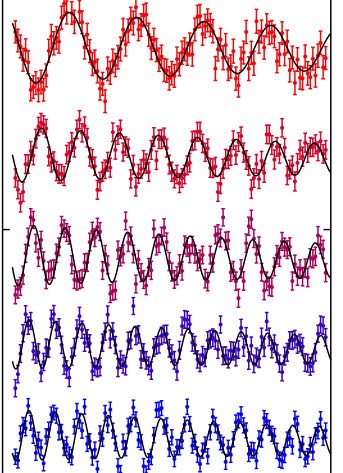
<figcaption class="paper-figure-caption"><b>Fig 1.</b> FIG. 1. ZF µSR measurements of CeMn2Ge2 demonstrating rapid oscillatory behaviour in the first 0.05 µs of the time window. (a) Asymmetry spectra below Tc = 318 K, with the change in (b) precession frequency and (c) amplitudes, A1 (red circles), A2 (blue squares), and A1 + A2 (green triangles) with temperature. The dotted line at 218 K marks the onset of changes in the amplitudes due to the spin reorientation transition at Tc.</figcaption>
</figure>
<figure class="paper-figure-card">
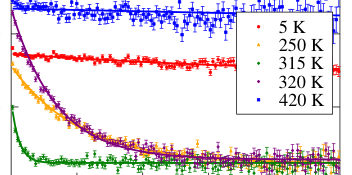
<figcaption class="paper-figure-caption"><b>Fig 2.</b> FIG. 2. ZF µSR measurements of CeMn2Ge2 demonstrat- ing relaxing behaviour over 5 µs. (a) Asymmetry spectra at several temperatures, showing the missing asymmetry as- sociated to the oscillating fraction being recovered above Tc. (b) Change in relaxation rate with temperature [with an inset showing the decrease in relaxing amplitude A3 (blue squares)], that occurs between 218 K and Tc (green circles). The fit of Eq. 6 to λ3 is shown in black and the background contribu- tion, A4 (orange triangles), is approximately constant. Above Tc = 318 K both amplitudes are globally refined and held con- stant, and λ3 points are plotted as purple diamonds.</figcaption>
</figure>
<figure class="paper-figure-card">
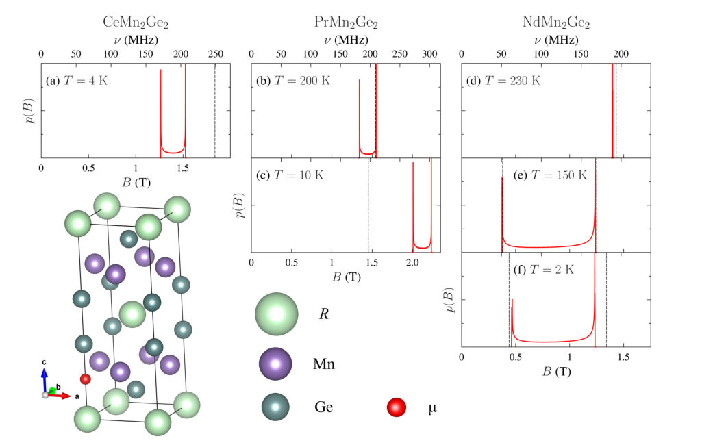
<figcaption class="paper-figure-caption"><b>Fig 3.</b> FIG. 3. Dipole field distributions calculated at the muon site for reported incommensurate magnetic orderings in RMn2Ge2 (R=Ce, Pr, Nd), with the muon site shown in the structure of RMn2Ge2 (R=Ce, Pr, Nd). In CeMn2Ge2, the field distribution corresponding to the measured helical magnetic structure [27] at (a) 4 K is shown, with the dotted line corresponding to the precession frequency of 249.0(5) MHz from our µSR measurements. In PrMn2Ge2 the field distributions for the reported magnetic structures [28] at (b) 200 K and (c) 10 are presented. The dotted lines indicate the value of the local field from our µSR measurements, which corresponds to precession frequencies of 209.0(4) MHz at 200 K...</figcaption>
</figure>
<figure class="paper-figure-card">
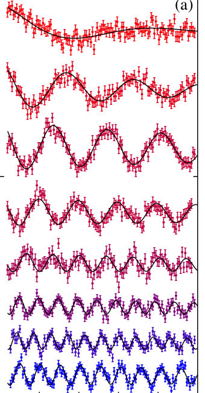
<figcaption class="paper-figure-caption"><b>Fig 4.</b> FIG. 4. ZF µSR measurements of PrMn2Ge2. (a) A set of asymmetry spectra, demonstrating the evolution of the oscillations with temperature. (b) Variation of the precession frequency with temperature, fitted with Eq. 8. (c) Temperature dependence of the slow magnetic dynamics (λ3) below Tc (with the fit of Eq. 6 shown in black) and the rapid relaxation of the oscillating term (λ1) above Tc. (d) Variation of oscillating (A1), relaxing (A2) and total amplitude below Tc, demonstrating the swapping of amplitudes between Ticm and Tc.</figcaption>
</figure>
<figure class="paper-figure-card">
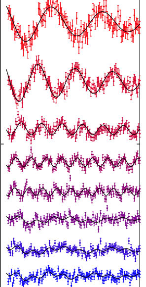
<figcaption class="paper-figure-caption"><b>Fig 5.</b> FIG. 5. Evolution of the early-time spectra of NdMn2Ge2 with temperature, demonstrating the transi- tion to a single frequency above TSR = 215 K that increase in amplitude with spin-reorientation into the a-b plane at higher temperatures.</figcaption>
</figure>
</div>

<p><strong>Summary.</strong> This work characterizes the temperature-dependent local magnetism in RMn2Ge2 intermetallics using muon spin spectroscopy. By analyzing magnetic transitions from conical to antiferromagnetic phases, the authors map out how rare-earth ion ordering and crystal symmetry dictate the material's exotic magnetic behavior. The combination of $\mu$SR measurements and DFT calculations provides a detailed picture of local spin dynamics in these correlated systems.</p>
<p><strong>Why it may be interesting.</strong> While focused on magnetism, the use of $\mu$SR to probe local spin dynamics and symmetry breaking in correlated materials provides insights into complex many-body ground states relevant to strongly correlated electron physics.</p>
<details>
<summary>Detailed structure</summary>
<p><strong>Main problem.</strong> The study investigates the local magnetic properties of rare-earth intermetallic compounds RMn2Ge2, focusing on their temperature-dependent magnetic transitions and skyrmion hosting.</p>
<p><strong>Main result.</strong> Muon spin spectroscopy reveals distinct magnetic phases (conical to collinear AFM) across the series, with disorder increasing from Ce to Nd. The local magnetism is strongly influenced by rare-earth ion ordering at low temperatures.</p>
<p><strong>Method.</strong> The research combines experimental measurements using Muon Spin Rotation ($\mu$SR) with theoretical calculations employing Density Functional Theory (DFT) and Crystal Field Hamiltonian analysis.</p>
<p><strong>Model / system.</strong> The physical system is the rare-earth intermetallic compounds RMn2Ge2 (R=Ce, Pr, Nd). The magnetism involves transitions between conical and collinear antiferromagnetic structures, which are probed by local magnetic field measurements.</p>
<p><strong>Key observables.</strong> Muon asymmetry A(t), precession frequency $\nu(T)$, local magnetic fields $|B|$, and energy level splittings $\Delta \text{CEF}$.</p>
<p><strong>Important parameters / regimes.</strong> Temperature (T) regimes defining phase transitions ($T_c=318$ K, $T_N=417$ K), and the rare-earth element R.</p>
<p><strong>Assumptions / limitations.</strong> The analysis assumes the muon site is crystallographically unique for tracking changes across the series; DFT calculations use specific functionals (PBE).</p>
<p><strong>Figures summary.</strong> Figures show rapid oscillatory $\mu$SR spectra below $T_c$, order-parameter-like behavior of frequency vs. temperature, and comparisons between calculated dipolar field distributions at candidate muon sites and measured local fields.</p>
<p><strong>Paper structure.</strong> The paper systematically analyzes the magnetic transitions using $\mu$SR data across different R elements (Ce, Pr, Nd), correlating observed spectral changes with theoretical predictions derived from DFT calculations of local fields based on assumed magnetic structures.</p>
</details>
<details>
<summary>Abstract</summary>
<p>We present an investigation of the rare-earth intermetallic materials, $R$Mn$_2$Ge$_2$ ($R$=Ce, Pr, Nd), reported to host a lattice of skyrmionic bubbles at room temperature. The magnetism of all three materials is characterised by the onset of local fluctuations as the magnetic state changes from a conical magnetic structure to a collinear antiferromagnetic one as temperature $T$ is increased. In this $T$ regime, where skyrmion-bubble textures have been reported, we see dynamics similar to those observed in other skyrmion-hosting materials. The level of disorder above this transition increases across the series from $R$=Ce to Nd. At low temperatures the magnetism is affected by the ordering of the rare-earth ions, resulting in distinct behaviour for the different members of the series.</p>
</details>
<p><sub><a href="#top">↑ back to top</a></sub></p>

<p><a id="paper-2608.07467"></a></p>
<h3 id="quantum-de-sitter-and-analytically-continued-chern-simons-theory"><a href="http://arxiv.org/abs/2608.07467v1">Quantum de Sitter and Analytically Continued Chern Simons Theory</a></h3>
<p><strong>Authors:</strong> Stephon Alexander, Kenneth Blakey<br>
<strong>Type:</strong> theory · <strong>Category:</strong> other · <strong>PDF:</strong> <a href="https://arxiv.org/pdf/2608.07467v1">https://arxiv.org/pdf/2608.07467v1</a><br>
<strong>Analysis basis:</strong> full PDF text, analyzed in chunks
<strong>Topic relevance:</strong> <code>Keldysh / 2PI / non-Gaussian methods</code> <strong>3/5</strong> · <code>non-equilibrium dynamics</code> <strong>2/5</strong> · <code>driven-dissipative phase transition</code> <strong>1/5</strong> · <code>methods for driven-dissipative</code> <strong>1/5</strong> · <code>non-equilibrium universality</code> <strong>1/5</strong></p>
<div class="figure-strip-hint">↔ Scroll figures horizontally</div>
<div class="paper-figures-scroll">
<figure class="paper-figure-card">
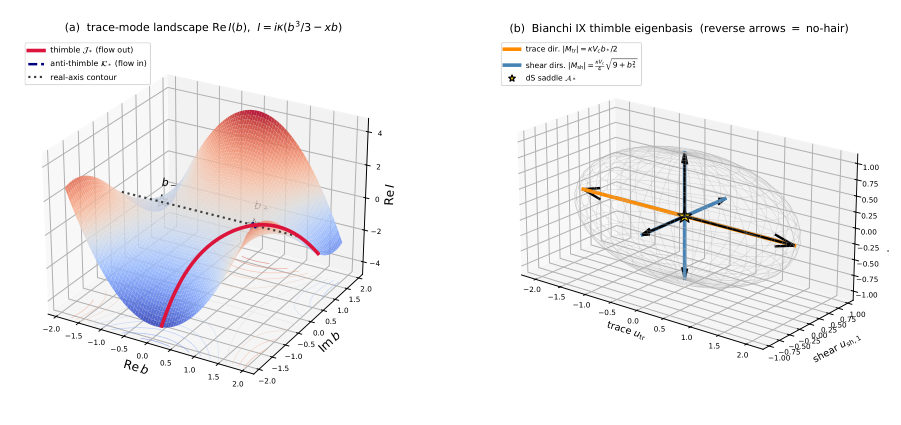
<figcaption class="paper-figure-caption"><b>Fig 1.</b> Figure 1: The Lefschetz thimble through the de Sitter saddle in the Bianchi IX trunca- tion. Black arrows show the downwards gradient flow dz/ds = −∂I that sweeps out the Lefschetz thimble. Left: the Morse landscape of Re I over the complexified trace direc- tion b ∈C for I(b) = −iκ(b3/3 −xb) (sign convention as in (27)); the gold star is the convergent saddle b+ (expanding branch), the white star its conjugate b−(contracting branch). The red curve is the Lefschetz thimble J∗through b+; the blue dashed curve is the dual Lefschetz anti-thimble K∗; the thin dotted line is the original oscillatory real axis contour. The saddle is thus a hyperbolic fixed point of the flow. Right: the same...</figcaption>
</figure>
</div>

<p><strong>Summary.</strong> This work develops a rigorous method using Lefschetz thimbles to define the quantum state (Kodama wavefunctional) for gravity in de Sitter spacetime. By analytically continuing the Chern–Simons theory, the authors achieve an absolutely convergent semiclassical expansion. This successfully reproduces known results like the Hartle–Hawking wavefunction and demonstrates that Airy behavior arises naturally from the full dynamics.</p>
<p><strong>Why it may be interesting.</strong> While focused on quantum gravity, the mathematical techniques—such as using Lefschetz thimbles to regularize path integrals and analyze gradient flows near saddle points—are highly relevant to non-equilibrium statistical mechanics or open quantum systems where complex analysis is used to define partition functions.</p>
<details>
<summary>Detailed structure</summary>
<p><strong>Main problem.</strong> The paper addresses the quantum description of de Sitter spacetime by defining the Chern–Simons–Kodama wavefunctional in Lorentzian self-dual gravity, overcoming issues with convergence and normalization.</p>
<p><strong>Main result.</strong> Using a Lefschetz thimble definition allows for an absolutely convergent semiclassical expansion, reproducing the Hartle–Hawking Airy wavefunction structure even in anisotropic truncations like Bianchi IX.</p>
<p><strong>Method.</strong> The authors employ complexification of the connection and utilize Picard–Lefschetz theory to define the functional integral along a specific Lefschetz thimble attached to the de Sitter saddle point.</p>
<p><strong>Model / system.</strong> The system is quantum gravity in de Sitter spacetime ($\Lambda > 0$), modeled using self-dual Ashtekar variables and constrained by the Chern–Simons–Kodama functional. Analysis is performed via minisuperspace truncations (FRW, Bianchi IX).</p>
<p><strong>Key observables.</strong> The resulting wavefunction structure, particularly its connection to the Airy function in homogeneous/isotropic reduction and Gaussian damping in shear directions.</p>
<p><strong>Important parameters / regimes.</strong> Positive cosmological constant ($\Lambda > 0$), coupling constants ($\kappa$), and the specific saddle point geometry of de Sitter space.</p>
<p><strong>Assumptions / limitations.</strong> The analysis is restricted to minisuperspace truncations (FRW, Bianchi IX), and the Lefschetz thimble prescription is used to regularize the path integral.</p>
<p><strong>Paper structure.</strong> The paper develops the formalism by defining the wavefunctional via complexified connections and applying Picard–Lefschetz theory. It then applies this machinery to specific symmetry reductions (FRW, Bianchi IX) to derive explicit forms for the semiclassical wavefunction.</p>
</details>
<details>
<summary>Abstract</summary>
<p>We give a Lefschetz thimble definition of the Chern--Simons--Kodama wavefunctional in Lorentzian self-dual gravity with positive cosmological constant. By complexifying the connection and choosing the Lefschetz thimble attached to the self-dual de~Sitter saddle, Witten's analytic continuation of Chern--Simons theory replaces the real contour, on which the defining integral is at best conditionally convergent, by an absolutely convergent integration cycle and yields a controlled semiclassical expansion. The relevant integrand is the full holomorphic exponential $e^{I}$, with $I=κY_{\rm CS}+(\text{source})$, and the steepest descent flow is governed by the Morse function $h=\operatorname{Re} I$. In the homogeneous isotropic de Sitter reduction, the construction reproduces the Hartle--Hawking Airy wavefunction. In the Bianchi~IX truncation, we take the Lefschetz thimble attached to the expanding de~Sitter saddle (the contracting branch defines a conjugate Lefschetz thimble); within this sector, the symmetric configuration is the only critical point for $Λ>0$. The corresponding Lefschetz thimble contains one trace direction with the FRW Airy structure and two anisotropic shear directions that are real-Gaussian damped at leading quadratic order. This gives a finite Bianchi~IX wavefunction which, to leading order, is the FRW Airy factor multiplied by a real anisotropy Gaussian. Thus, the Airy behavior is not an artifact of the one-dimensional minisuperspace reduction, but the leading form of the wavefunction on the Lefschetz thimble. We also discuss how the Lefschetz thimble prescription interfaces with Lorentzian reality conditions.</p>
</details>
<p><sub><a href="#top">↑ back to top</a></sub></p>

<p><a id="paper-2608.06504"></a></p>
<h3 id="excitonic-magnetism-in-ruthenium-pyrochlores"><a href="http://arxiv.org/abs/2608.06504v1">Excitonic Magnetism in Ruthenium Pyrochlores</a></h3>
<p><strong>Authors:</strong> Swetlana Swarup, Yang Yang, Natalia B. Perkins<br>
<strong>Type:</strong> theory · <strong>Category:</strong> strongly correlated electrons · <strong>PDF:</strong> <a href="https://arxiv.org/pdf/2608.06504v1">https://arxiv.org/pdf/2608.06504v1</a><br>
<strong>Analysis basis:</strong> full PDF text, analyzed in chunks
<strong>Topic relevance:</strong> <code>exotic spin models in light-matter</code> <strong>3/5</strong> · <code>Keldysh / 2PI / non-Gaussian methods</code> <strong>1/5</strong> · <code>analog quantum simulation</code> <strong>1/5</strong> · <code>spintronics-quantum-optics interface</code> <strong>1/5</strong></p>
<div class="figure-strip-hint">↔ Scroll figures horizontally</div>
<div class="paper-figures-scroll">
<figure class="paper-figure-card">
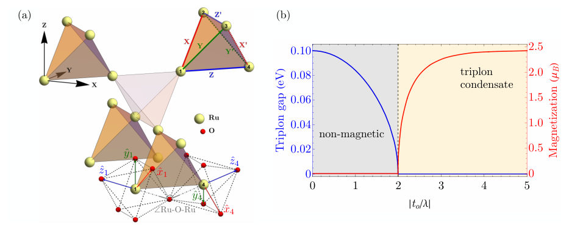
<figcaption class="paper-figure-caption"><b>Fig 1.</b> Figure 1: (a) Pyrochlore lattice of Ru ions, consisting of two types of tetrahedra (dark- and light- shaded). Black arrows (X, Y, Z) indicate the global reference frame. The local reference frames (ˆx1, ˆy1, ˆz1) and (ˆx4, ˆy4, ˆz4), defined by the surrounding oxygen octahedral cages, are shown for sublattice sites 1 and 4, respectively. The nearest-neighbor bonds are marked in red, blue, and green within the top- right tetrahedron. In the ideal pyrochlore structure, the bond angle at the bridging oxygen between two neighboring Ru ions is ∠Ru-O-Ru = 2 arctan(2 √</figcaption>
</figure>
<figure class="paper-figure-card">
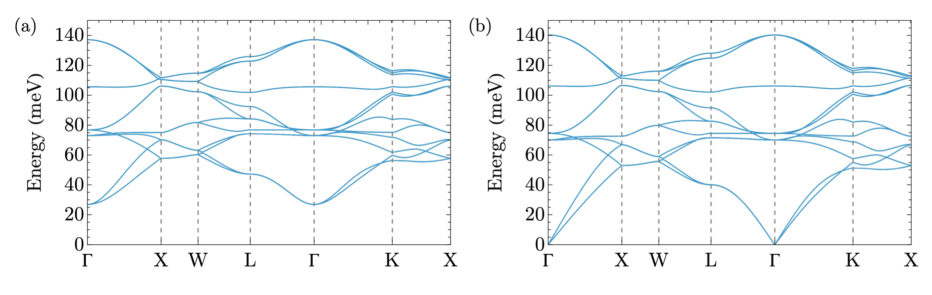
<figcaption class="paper-figure-caption"><b>Fig 2.</b> Figure 2: Dispersion of the 12 triplon bands above the singlet ground state along the high-symmetry path in momentum space, computed with U2 = 1.7 eV, JH = 0.35 eV, and λ = 0.1 eV: (a) below the critical hopping at |to/λ| = 1.9 and (b) at the critical hopping |to/λ| = 1.9923.</figcaption>
</figure>
<figure class="paper-figure-card">
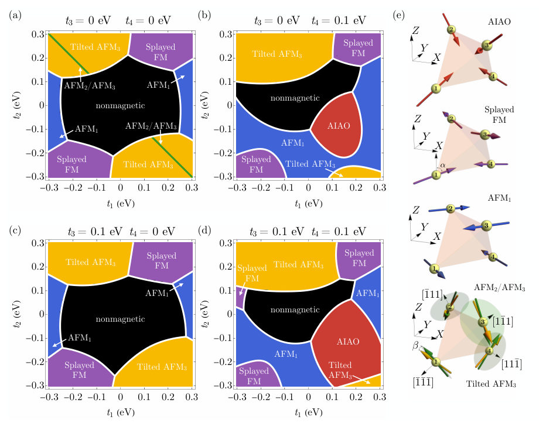
<figcaption class="paper-figure-caption"><b>Fig 3.</b> Figure 3: q = 0 phase diagram of the microscopic model as a function of the dominant hoppings t1 and t2 obtained by minimizing the variational ground-state energy at (a) t3 = t4 = 0 eV, (b) t3 = 0 eV and t4 = 0.1 eV, (c) t3 = 0.1 eV and t4 = 0 eV, (d) t3 = 0.1 eV and t4 = 0.1 eV. Along the green line in (a), where t1 = −t2 and t3 = t4 = 0, an accidental U(1) symmetry emerges that allows all four spins to rotate by a common angle within their respective local planes perpendicular to the axis pointing toward the center of the tetrahedron. The spin configuration of each phase is depicted in (e): the splayed FM is parametrized by the splay angle α measured from the z-axis, and the tilted AFM3...</figcaption>
</figure>
<figure class="paper-figure-card">
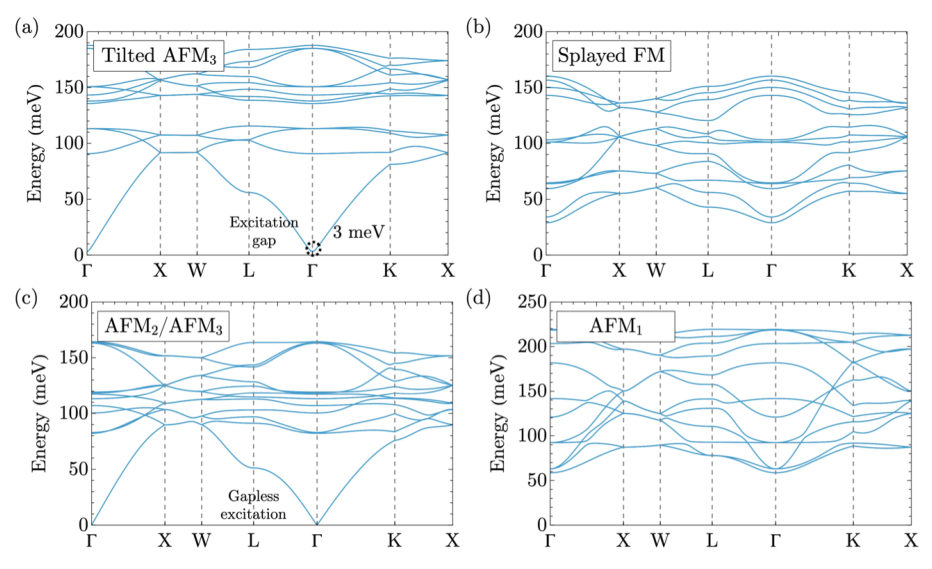
<figcaption class="paper-figure-caption"><b>Fig 4.</b> Figure 4: Excitation of triplon condensate with four magnetic sturcture shown in Fig. 3(a), fixing t3 = t4 = 0. (a) Tilted AFM3 (t1 = −0.1 eV, t2 = 0.2 eV), (b) Splayed FM (t1 = 0.1 eV, t2 = 0.2 eV), (c) AFM2/AFM3 (t1 = −0.15 eV, t2 = 0.15 eV), and (d) AFM1 (t1 = 0.3 eV, t2 = 0.0 eV).</figcaption>
</figure>
<figure class="paper-figure-card">
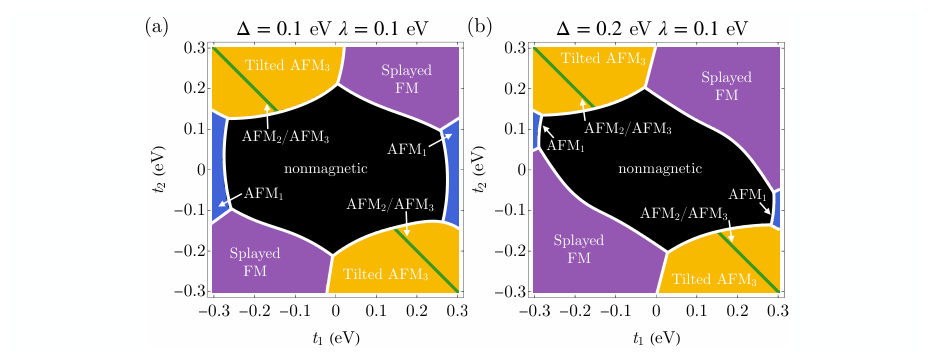
<figcaption class="paper-figure-caption"><b>Fig 5.</b> Figure 5: Phase diagram of the microscopic model with trigonal distortion: (a) The trigonal field ∆is comparable to spin–orbit coupling, (b) The trigonal field ∆is twice to spin–orbit coupling. All the other parameters are kept the same as in Fig. 3(a).</figcaption>
</figure>
</div>

<p><strong>Summary.</strong> This work develops a microscopic theory for excitonic magnetism in ruthenium pyrochlores by analyzing the effective interactions within the low-energy singlet-triplet manifold. It shows that strong spin-orbit coupling can lead to an instability of the nonmagnetic ground state, causing condensation of magnetic excitations (triplons). The resulting phase diagram provides a unified framework connecting theory predictions to experimental measurements in ruthenates.</p>
<p><strong>Why it may be interesting.</strong> The concept of excitonic magnetism—where magnetic order arises from bosonic condensation (triplons) rather than localized moments—provides a powerful theoretical lens for understanding correlated materials, linking electronic structure calculations directly to measurable spectroscopic excitations like Raman scattering.</p>
<details>
<summary>Detailed structure</summary>
<p><strong>Main problem.</strong> The paper addresses the contradiction between strong spin-orbit coupling suggesting a nonmagnetic singlet ground state in Ru pyrochlores, while experimental evidence shows robust magnetic order.</p>
<p><strong>Main result.</strong> The theory predicts that the nonmagnetic singlet state becomes unstable toward triplon condensation as hopping parameters increase, leading to magnetically ordered phases and identifying an additional phase unique to this excitonic description.</p>
<p><strong>Method.</strong> A microscopic theory is developed using a multi-orbital Hubbard model, deriving effective superexchange interactions within the low-energy singlet--triplet manifold. The analysis employs both spectrum calculations (triplon excitations) and variational treatments of the condensed phase.</p>
<p><strong>Model / system.</strong> The system studied is Ruthenium pyrochlores ($  ext{A}_2    ext{Ru}_2   ext{O}_7$), focusing on $   ext{Ru}^{4+}$ ($d^4$) ions. The model starts from a Hubbard Hamiltonian incorporating SOC and crystal field effects, projecting onto the low-energy singlet--triplet subspace.</p>
<p><strong>Key observables.</strong> Triplon gap ($\Delta_{	ext{triplon}}$), magnetization ($\mu_B$), and the magnetic phase diagram as a function of hopping parameters.</p>
<p><strong>Important parameters / regimes.</strong> Microscopic hopping parameters ($|t_{	ext{o}}/\lambda|$), which govern the transition between non-magnetic and magnetic states.</p>
<p><strong>Assumptions / limitations.</strong> The analysis focuses on the $t_{2g}$ manifold, and in some sections, a harmonic approximation is used by expanding around the singlet-condensed state.</p>
<p><strong>Figures summary.</strong> Figure 1(b) plots the triplon gap and magnetization versus $|t_{	ext{o}}/\lambda|$, showing the transition point. Other figures illustrate the dispersion of triplon bands and lattice structure details.</p>
<p><strong>Paper structure.</strong> The paper builds from defining the single-ion Hamiltonian (including SOC and crystal field), deriving the effective low-energy superexchange Hamiltonian, analyzing the stability via triplon excitation spectra, mapping out the phase diagram, and finally applying the theory to specific ruthenates like $ ext{Nd}_2   ext{Ru}_2   ext{O}_7$.</p>
</details>
<details>
<summary>Abstract</summary>
<p>Strong spin-orbit coupling in $d^4$ systems is expected to stabilize a nonmagnetic $J=0$ singlet ground state, yet many ruthenium pyrochlores exhibit robust long-range magnetic order. Motivated by this apparent contradiction, we develop a microscopic theory of Van Vleck excitonic magnetism on the pyrochlore lattice. Starting from a multi-orbital Hubbard model with spin-orbit coupling, we derive the effective superexchange interactions within the low-energy singlet--triplet manifold of Ru$^{4+}$ ions. We analyze the resulting excitonic Hamiltonian using both the spectrum of triplon excitations and a variational treatment of the condensed phase. We identify the instability of the nonmagnetic singlet state toward triplon condensation and determine the resulting magnetic phase diagram as a function of the microscopic hopping parameters. The phase diagram reproduces the magnetic orders known from conventional pyrochlore models while also predicting an additional magnetic phase unique to the singlet--triplet description. Finally, we apply the theory to the pyrochlore ruthenates, with particular emphasis on Nd$_2$Ru$_2$O$_7$, and show that it lies in close proximity to the excitonic quantum critical point. Our results establish a microscopic framework for understanding excitonic magnetism in pyrochlore ruthenates and their magnetic excitation spectrum, providing direct connections to spectroscopic probes, including Raman scattering.</p>
</details>
<p><sub><a href="#top">↑ back to top</a></sub></p>

<p><a id="paper-2608.07277"></a></p>
<h3 id="demonstration-of-an-llo-cv-qkd-system-over-12-km-of-optical-fiber"><a href="http://arxiv.org/abs/2608.07277v1">Demonstration of an LLO CV-QKD system over 12 km of optical fiber</a></h3>
<p><strong>Authors:</strong> Christiano M. S. Nascimento, Artur A. Matoso, Gustavo C. Amaral, Guilherme P. Temporão<br>
<strong>Type:</strong> experiment · <strong>Category:</strong> quantum information and computing · <strong>PDF:</strong> <a href="https://arxiv.org/pdf/2608.07277v1">https://arxiv.org/pdf/2608.07277v1</a><br>
<strong>Analysis basis:</strong> full PDF text, analyzed in chunks
<strong>Topic relevance:</strong> <code>quantum optics experiment</code> <strong>3/5</strong> · <code>QC/QI experiment</code> <strong>1/5</strong> · <code>interference shaping light</code> <strong>1/5</strong></p>
<div class="figure-strip-hint">↔ Scroll figures horizontally</div>
<div class="paper-figures-scroll">
<figure class="paper-figure-card">
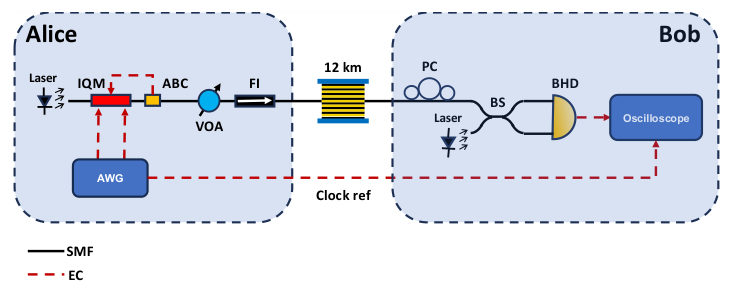
<figcaption class="paper-figure-caption"><b>Fig 1.</b> FIG. 1: Experimental setup of LLO CV-QKD. Alice’s station consists of a continuous-wave (CW) laser operating at 1550 nm and an in-phase and quadrature modulator (IQM) with an automatic bias controller (ABC) driven by an arbitrary waveform generator (AWG) with 16-bit resolution and a sampling rate of 3.125 GSa/s. A variable optical attenuator (VOA) is placed after the IQ modulator (at the exit of Alice’s station) to adjust the optical power and enforce the few-photon regime. A 12 km single-mode fiber (SMF) constitutes the quantum channel. At Bob’s station, a polarization controller (PC) allows one to align the polarization of the incoming signal to the LO signal generated from an independent...</figcaption>
</figure>
<figure class="paper-figure-card">
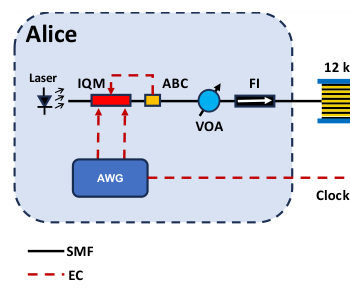
<figcaption class="paper-figure-caption"><b>Fig 2.</b> Fig. 1 shows the experimental setup of the LLO CV-QKD laboratory link including the optical layout and the electro-optical devices necessary to perform the Gaussian-modulated coherent-state protocol. At the sender, Alice, a continuous-wave (CW) laser with a narrow linewidth of 1 kHz operating at 1550 nm was used as the optical carrier. The coherent states were prepared by driving an IQ modulator with the output from a 16-bit arbitrary waveform generator (AWG) with two channels operating at a sampling rate of 3.125 GSa/s. The IQ modulator was operated in single-sideband mode by digitally frequency-shifting the transmitted signal and controlling the direct-current bias voltages with an auto-...</figcaption>
</figure>
<figure class="paper-figure-card">
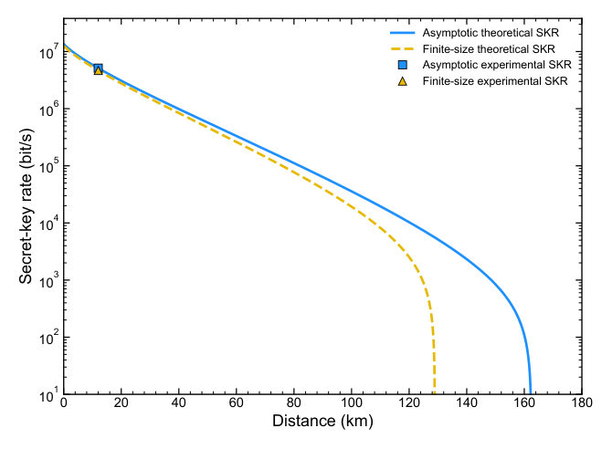
<figcaption class="paper-figure-caption"><b>Fig 3.</b> FIG. 2: The secret key rate (SKR) versus fiber channel length with an attenuation factor of 0.185 dB/km in asymptotic (blue solid line) and finite-size (yellow dashed) regimes. The square and triangle correspond to our experimental results in asymptotic and finite-size regimes, respectively.</figcaption>
</figure>
</div>

<p><strong>Summary.</strong> The authors report an experimental demonstration of a secure Continuous-Variable Quantum Key Distribution (CV-QKD) system operating over 12 km of optical fiber. By implementing a Local-Local-Oscillator (LLO) scheme, they overcome security loopholes associated with shared local oscillators. The results establish practical key rates exceeding $5 	ext{ Mbit/s}$, paving the way for metropolitan quantum networking.</p>
<p><strong>Why it may be interesting.</strong> This work is highly relevant as it pushes quantum communication technology into practical metropolitan deployment regimes by solving critical hardware/security issues inherent in previous CV-QKD implementations.</p>
<details>
<summary>Detailed structure</summary>
<p><strong>Main problem.</strong> The goal was to demonstrate a secure Local-Local-Oscillator (LLO) Continuous-Variable Quantum Key Distribution (CV-QKD) system over a significant distance of 12 km optical fiber while mitigating security loopholes.</p>
<p><strong>Main result.</strong> The experiment successfully achieved secret key rates of $5.11 	ext{ Mbit/s}$ in the asymptotic regime and $4.67 	ext{ Mbit/s}$ in the finite-size regime, validating metropolitan deployment potential.</p>
<p><strong>Method.</strong> The system utilized Gaussian CV-QKD with fully independent transmitter and receiver lasers, followed by complex classical post-processing including information reconciliation (using MET-LDPC codes) and privacy amplification.</p>
<p><strong>Model / system.</strong> The physical platform is an LLO CV-QKD setup implemented over a 12 km single-mode optical fiber. The security analysis was conducted under a trusted-device model, addressing the local oscillator loophole by using independent sources at both ends.</p>
<p><strong>Key observables.</strong> Secret key rates ($5.11 	ext{ Mbit/s}$ asymptotic; $4.67 	ext{ Mbit/s}$ finite-size), measured average attenuation ($0.185 	ext{ dB/km}$), and excess noise ($\xi_B = 15.99 	ext{ mSNU}$).</p>
<p><strong>Important parameters / regimes.</strong> Channel length of 12 km; processing large logical frames ($\approx 10^7$ states); asymptotic transmittance $   ext{T} = 0.6$.</p>
<p><strong>Assumptions / limitations.</strong> The security assessment is performed under a trusted-device model, which limits the scope of the security proof.</p>
<p><strong>Figures summary.</strong> Figure 1 illustrates the experimental setup diagram for LLO CV-QKD components; Figure 2 plots the Secret Key Rate versus fiber length for both asymptotic and finite-size regimes.</p>
<p><strong>Paper structure.</strong> The paper details the experimental setup, describes the sophisticated digital signal processing (DSP) routine for synchronization and parameter recovery, outlines the classical post-processing steps (reconciliation, estimation, amplification), presents the measured key rates, and discusses future work.</p>
</details>
<details>
<summary>Abstract</summary>
<p>Continuous-variable quantum key distribution (CV-QKD) promises high rates and seamless integration with classical beams within a single optical fiber. Over the years, implementations have been performed by transmitting a local oscillator reference along with the quantum channel, opening security loopholes for eavesdroppers and limiting potential applications. Here, we report on a Gaussian CV-QKD implementation using fully independent transmitter and receiver lasers (local-oscillator sources) over a 12 km fiber spool. The system was experimentally evaluated using logical frames containing approximately $10^7$ coherent states, each composed of ten independently processed subframes of approximately $10^6$ states, and security was assessed in both asymptotic and finite-size regimes under a trusted-device model. The full-fledged classical post-processing is capable of recovering the channel parameters and extracting secret key rates of 5.11 Mbit/s in the asymptotic regime and 4.67 Mbit/s in the finite-size regime, showing good agreement with theoretical predictions. This work establishes the foundation for metropolitan fiber deployment of CV-QKD under strict security constraints.</p>
</details>
<p><sub><a href="#top">↑ back to top</a></sub></p>

<p><a id="paper-2608.07372"></a></p>
<h3 id="exciton-alchemy-chern-excitons-from-trivial-bands"><a href="http://arxiv.org/abs/2608.07372v1">Exciton Alchemy: Chern Excitons from Trivial Bands</a></h3>
<p><strong>Authors:</strong> Yoonseok Hwang, Henry Davenport, Frank Schindler<br>
<strong>Type:</strong> theory · <strong>Category:</strong> other · <strong>PDF:</strong> <a href="https://arxiv.org/pdf/2608.07372v1">https://arxiv.org/pdf/2608.07372v1</a><br>
<strong>Analysis basis:</strong> full PDF text, analyzed in chunks
<strong>Topic relevance:</strong> <code>analog quantum simulation</code> <strong>3/5</strong> · <code>correlated cavity matter</code> <strong>1/5</strong> · <code>driven-dissipative phase transition</code> <strong>1/5</strong></p>
<div class="figure-strip-hint">↔ Scroll figures horizontally</div>
<div class="paper-figures-scroll">
<figure class="paper-figure-card">
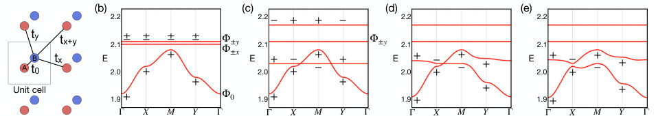
<figcaption class="paper-figure-caption"><b>Fig 1.</b> FIG. 1. (a) Unit cell and hopping geometry of the model with A and B sublattices. We consider t0 = 1, tx = 0.025, tx+y = 0.02, and ty = 0. These hopping amplitudes can be naturally realized on an oblique lattice as the first-, second-, third-, and fifth-nearest-neighbor hoppings, respectively [50]. For notational convenience, however, we choose the primitive lattice vectors to be (1, 0) and (0, 1) throughout this work. (b) Exciton band structure in the atomic limit (t0 = 1) after introducing the density-density interactions (U0, Ux, Uy) = (0.125, 0.10, 0.06). The inversion eigenstates Φ0, Φ±x, and Φ±y, together with their inversion eigenvalues at the four HSMs, are indicated. At every HSM,...</figcaption>
</figure>
<figure class="paper-figure-card">
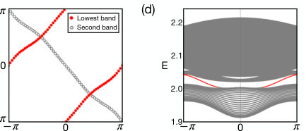
<figcaption class="paper-figure-caption"><b>Fig 2.</b> FIG. 2. (a) Exciton band structure of the minimal 5 × 5 model after introducing the additional terms tx+y = 0.02 and U ′ x = 0.015. A full bulk gap is opened above the lowest exci- ton band. (b) Exciton band structure with the enlarged and more realistic 441 × 441 basis. Additional exciton continua emerge at higher energies, while the low-energy bands remain essentially unchanged. (c) Wilson-loop spectra of the low- est and second exciton bands in (b), corresponding to Chern numbers Cexc = +1 and −1, respectively. (d) Ribbon spec- trum with 20 layers along the open x direction. The chiral exciton edge states traversing the bulk gap are highlighted in red.</figcaption>
</figure>
</div>

<p><strong>Summary.</strong> This paper presents a theoretical framework demonstrating that strong electron-hole interactions can induce non-trivial Chern topology in excitons even if the constituent electronic bands are topologically trivial. By constructing an explicit 2D model and analyzing its band structure using symmetry constraints and Wilson loops, the authors provide a general recipe for designing interaction-driven topological materials.</p>
<p><strong>Why it may be interesting.</strong> This work provides a concrete, controllable mechanism (interaction tuning) to engineer topological properties in excitons, which are neutral quasiparticles relevant for quantum light sources and optoelectronics.</p>
<details>
<summary>Detailed structure</summary>
<p><strong>Main problem.</strong> To demonstrate that interaction-induced topological excitons (Chern excitons) can exist even when the underlying electronic bands are topologically trivial.</p>
<p><strong>Main result.</strong> The authors constructed an explicit microscopic model showing that interactions alone can generate non-trivial exciton topology, independent of the band structure's intrinsic topology.</p>
<p><strong>Method.</strong> The study combines real-space modeling with symmetry analysis (inversion eigenvalues) and momentum-space diagnostics using Wilson loops to calculate the Chern number.</p>
<p><strong>Model / system.</strong> A two-dimensional exciton model is used, derived from exponentially localized Wannier states for conduction and valence bands. The system's Hamiltonian includes hopping terms and density-density interactions ($U$ terms).</p>
<p><strong>Key observables.</strong> Chern exciton number ($C_{exc}$), Wilson loop spectra ($\arg W(p_y)$), and chiral edge states in ribbon geometry.</p>
<p><strong>Important parameters / regimes.</strong> Interaction strengths ($U_0, U_x, U_y, V_x$) and the small electron-hole separation $\Delta$.</p>
<p><strong>Assumptions / limitations.</strong> The analysis relies on restricting the Hilbert space to the active conduction-valence subspace; some calculations use a coincident embedding approximation for simplification.</p>
<p><strong>Figures summary.</strong> Figures illustrate the unit cell geometry, the effect of interactions leading to band inversion (Fig. 1c), and confirm the topology via bulk spectra showing gaps and ribbon spectra exhibiting chiral edge states (Fig. 2d).</p>
<p><strong>Paper structure.</strong> The paper progresses from establishing the theoretical possibility of interaction-induced topology, constructing an explicit model using Wannier states, demonstrating band inversion via specific interactions ($V_x$), and finally confirming the non-trivial topology using momentum-space diagnostics like Wilson loops.</p>
</details>
<details>
<summary>Abstract</summary>
<p>Exciton topology is commonly inherited from the topology of the underlying electronic bands. Recent theoretical work, however, has shown that the exciton Chern number can in general receive an additional contribution from the topology of the exciton envelope wave function, allowing, in principle, interaction-induced topological excitons even when the constituent electronic bands are topologically trivial. Here, we provide an explicit realization of this case by constructing a two-dimensional exciton model with topologically trivial conduction and valence bands that nevertheless hosts a Chern exciton diagnosed by inversion symmetry. Starting from a real-space limit of exponentially localized Wannier states for the conduction and valence bands, we identify the essential ingredients responsible for the emergent exciton topology and formulate a simple construction recipe. Our work demonstrates that interactions alone can generate nontrivial exciton topology, independent of the topology of the underlying electronic bands, and establishes a general framework for designing interaction-induced topological excitons.</p>
</details>
<p><sub><a href="#top">↑ back to top</a></sub></p>

<p><a id="paper-2608.06554"></a></p>
<h3 id="newton-schulz-retraction-based-inference-enables-hidden-quantum-markov-models-to-outperform-classical-hmms"><a href="http://arxiv.org/abs/2608.06554v1">Newton-Schulz Retraction-Based Inference Enables Hidden Quantum Markov Models to Outperform Classical HMMs</a></h3>
<p><strong>Authors:</strong> Ning Ning<br>
<strong>Type:</strong> both · <strong>Category:</strong> statistical mechanics · <strong>PDF:</strong> <a href="https://arxiv.org/pdf/2608.06554v1">https://arxiv.org/pdf/2608.06554v1</a><br>
<strong>Analysis basis:</strong> full PDF text, analyzed in chunks
<strong>Topic relevance:</strong> <code>methods for driven-dissipative</code> <strong>3/5</strong> · <code>Keldysh / 2PI / non-Gaussian methods</code> <strong>1/5</strong> · <code>driven-dissipative phase transition</code> <strong>1/5</strong></p>
<div class="figure-strip-hint">↔ Scroll figures horizontally</div>
<div class="paper-figures-scroll">
<figure class="paper-figure-card">
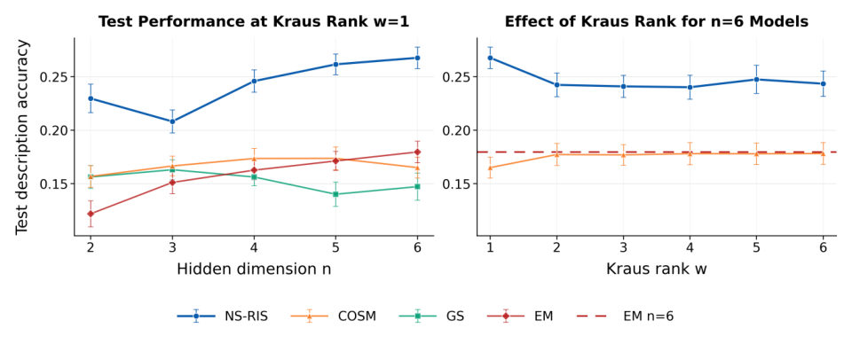
<figcaption class="paper-figure-caption"><b>Fig 1.</b> Figure 1: Test description accuracy for HQMM learning methods under varying hidden dimensions and Kraus ranks. Left: Performance with Kraus rank fixed at w = 1 while varying the hidden dimension n. We report the mean test description accuracy, with error bars indicating the standard deviation across test sequences. Right: Performance for models with hidden dimension n = 6 while varying the Kraus rank w. The EM baseline is shown as a horizontal dashed line because its performance is independent of w.</figcaption>
</figure>
<figure class="paper-figure-card">
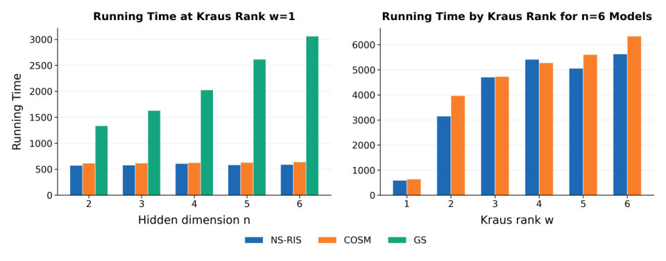
<figcaption class="paper-figure-caption"><b>Fig 2.</b> Figure 2: Running time comparison for HQMM learning methods under varying hidden dimensions and Kraus ranks. Left: Running time with Kraus rank fixed at w = 1 while varying the hidden dimension n. NS-RIS and COSM maintain relatively stable runtimes across hidden dimensions, whereas GS becomes substantially more expensive as n increases. Right: Running time for models with hidden dimension n = 6 while varying the Kraus rank w. Both NS-RIS and COSM require additional computation for larger Kraus ranks, but NS-RIS remains competitive with COSM across all tested settings.</figcaption>
</figure>
<figure class="paper-figure-card">

<figcaption class="paper-figure-caption"><b>Fig 3.</b> Figure 3: Comparison of NS-RIS, GS, COSM, and EM on the synthetic HQMM benchmark with configuration (n = 2, s = 6, w = 1). The top row reports the averaged training, validation, and test metrics with standard-deviation error bars across repeated runs, while the bottom row compares elapsed running times on a logarithmic scale. NS-RIS consistently achieves the best predictive performance across all evaluation metrics while also providing competitive computational efficiency.</figcaption>
</figure>
<figure class="paper-figure-card">
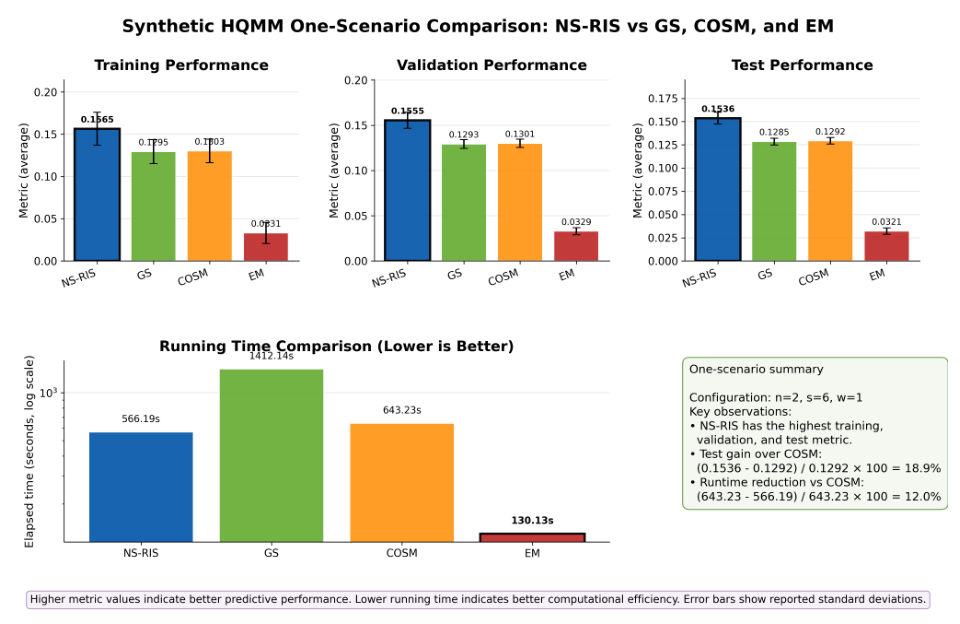
<figcaption class="paper-figure-caption"><b>Fig 4.</b> Figure 4 compares mean classification error for COSM and NS-RIS over latent dimensions n ∈ {2, 4, 6, 8} and Kraus ranks w ∈{1, 2, 4, 6}. The results show that increasing the latent dimension</figcaption>
</figure>
<figure class="paper-figure-card">
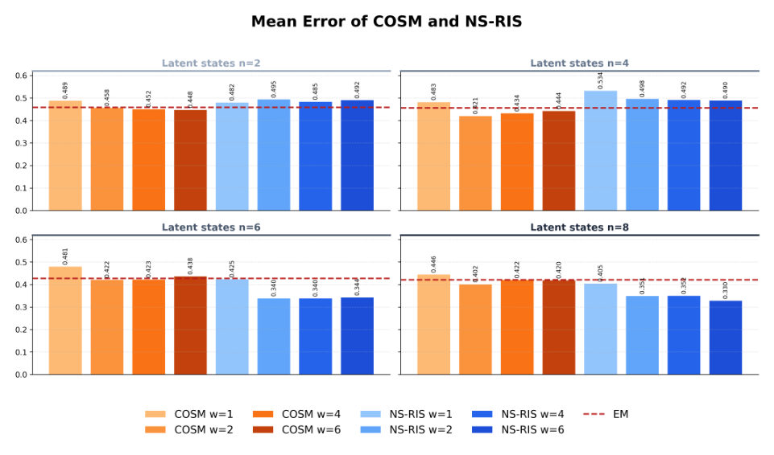
<figcaption class="paper-figure-caption"><b>Fig 5.</b> Figure 4: Mean error comparison of COSM and NS-RIS on the Splice dataset for latent state sizes n ∈{2, 4, 6, 8}. Within each panel, bars report the mean error for window sizes w ∈{1, 2, 4, 6}, with darker shades indicating larger w. The dashed horizontal line shows the EM baseline for the same latent state size: 0.458 for n = 2, 0.456 for n = 4, 0.428 for n = 6, and 0.421 for n = 8.</figcaption>
</figure>
</div>

<p><strong>Summary.</strong> This paper introduces NS-RIS, a novel and scalable inference algorithm for training Hidden Quantum Markov Models (HQMMs). By employing Newton-Schulz orthogonalization on the Stiefel manifold, it achieves mathematically guaranteed convergence while demonstrating superior predictive performance over classical HMMs and existing quantum models on multiple benchmarks. This moves HQMMs from theoretical constructs to practical tools for sequence data analysis.</p>
<p><strong>Why it may be interesting.</strong> While focused on machine learning inference, the rigorous mathematical treatment of optimization on constrained manifolds (Stiefel manifold) using advanced numerical techniques like Newton-Schulz retraction is highly relevant to developing robust parameter estimation methods for complex open quantum systems described by master equations or density matrices.</p>
<details>
<summary>Detailed structure</summary>
<p><strong>Main problem.</strong> Existing Hidden Quantum Markov Models (HQMMs) lack practical applicability because their learning methods fail to consistently outperform classical HMMs on data not generated by quantum processes.</p>
<p><strong>Main result.</strong> The proposed algorithm, NS-RIS, provides the first benchmark evidence that an HQMM can significantly outperform an EM-trained HMM even when trained on non-quantum data. It also establishes a finite-time stationarity guarantee for the inference process.</p>
<p><strong>Method.</strong> The authors introduce NS-RIS, which uses Newton-Schulz orthogonalization twice to perform scalable, trace-preserving optimization of HQMM parameters constrained to the Stiefel manifold.</p>
<p><strong>Model / system.</strong> The model is an extension of classical Hidden Markov Models (HMMs) to HQMMs, where probability vectors are replaced by density matrices and stochastic transitions by quantum operations (Kraus operators).</p>
<p><strong>Key observables.</strong> Mean classification error, test metric improvement percentage, runtime comparison across synthetic and real-world benchmarks (e.g., Splice dataset).</p>
<p><strong>Important parameters / regimes.</strong> The optimization is performed over the Stiefel manifold $   ext{St}(p, n)$, constrained by $\Gamma^\dagger\Gamma = I_n$. Convergence relies on step size ($\eta$) and momentum parameter ($eta$).</p>
<p><strong>Assumptions / limitations.</strong> Theoretical guarantees assume standard conditions like smoothness of the objective function, existence of stochastic gradients, and finite accuracy in the Newton-Schulz approximation.</p>
<p><strong>Figures summary.</strong> The results are shown across multiple benchmarks: synthetic HMM data (showing 38.5% average improvement), synthetic HQMM data (showing 18.9% metric improvement over COSM), and the real Splice classification benchmark (showing error reductions of up to 17.9%).</p>
<p><strong>Paper structure.</strong> The paper first introduces the theoretical framework, deriving convergence bounds for NS-RIS on the Stiefel manifold using Riemannian geometry concepts. It then presents empirical results demonstrating superior performance over classical and state-of-the-art quantum models across various benchmarks.</p>
</details>
<details>
<summary>Abstract</summary>
<p>Hidden Markov models (HMMs) are widely used probabilistic models for discrete sequential data but can be limited when hidden dynamics are complex. Hidden quantum Markov models (HQMMs) generalize HMMs by replacing probability vectors with density matrices and stochastic transitions with quantum operations, enabling richer latent representations. However, existing HQMM learning methods have not consistently outperformed Expectation--Maximization (EM)-trained HMMs on data not generated by quantum processes, limiting their practical applicability. We introduce NS-RIS, Newton--Schulz Retraction-based Inference on the Stiefel manifold, a scalable algorithm for learning trace-preserving HQMMs. NS-RIS uses Newton--Schulz orthogonalization to compute a polar-factor search direction while preserving Stiefel-manifold feasibility, avoiding costly matrix decompositions. We further establish a finite-time stationarity guarantee under standard assumptions on smoothness, stochastic gradients, and finite Newton--Schulz accuracy. Empirically, NS-RIS provides the first benchmark evidence that an HQMM can significantly outperform an EM-trained HMM on data not generated by a quantum model. On synthetic HMM-generated benchmarks, NS-RIS outperforms both EM and the state-of-the-art HQMM method COSM, improving the evaluation metric by an average of 38.5% and by up to 50.6%. On a synthetic HQMM benchmark, it improves the test metric over COSM by 18.9% while reducing runtime by 12.0%. On the real-world Splice classification benchmark, NS-RIS also surpasses both EM and COSM in higher-dimensional latent regimes, reducing mean classification error by 17.9% for latent dimension 6 and 14.9% for latent dimension 8 relative to COSM. These results move HQMMs beyond a theoretical generalization of HMMs and establish them as practical and expressive models for scientific sequence data.</p>
</details>
<p><sub><a href="#top">↑ back to top</a></sub></p>

<p><a id="paper-2608.06636"></a></p>
<h3 id="approaching-the-fundamental-limit-of-single-shot-qubit-frequency-tracking-with-an-adiabatic-tangentially-modulated-pulse"><a href="http://arxiv.org/abs/2608.06636v1">Approaching the Fundamental Limit of Single-Shot Qubit Frequency Tracking with an Adiabatic Tangentially-Modulated Pulse</a></h3>
<p><strong>Authors:</strong> Itamar Oren, Luke I. Dyer, Gerardo A. Paz-Silva, Chih Hwan Yang<br>
<strong>Type:</strong> theory · <strong>Category:</strong> quantum information and computing · <strong>PDF:</strong> <a href="https://arxiv.org/pdf/2608.06636v1">https://arxiv.org/pdf/2608.06636v1</a><br>
<strong>Analysis basis:</strong> full PDF text, analyzed in chunks
<strong>Topic relevance:</strong> <code>quantum measurements</code> <strong>3/5</strong> · <code>measurement-induced transitions</code> <strong>1/5</strong></p>
<div class="figure-strip-hint">↔ Scroll figures horizontally</div>
<div class="paper-figures-scroll">
<figure class="paper-figure-card">
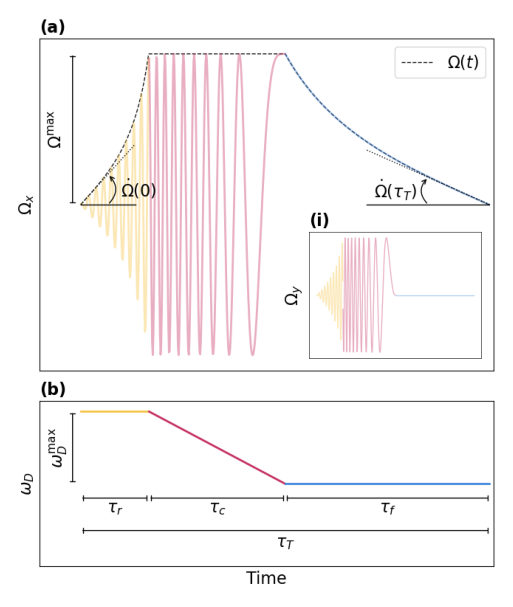
<figcaption class="paper-figure-caption"><b>Fig 1.</b> Figure 1. Construction of the adiabatic tangentially- modulated (ATM) pulse. (a) Amplitude modulation of the driving field, expressed as the Rabi frequency envelope Ω(t) [Eq. (4)]. The envelope consists of three segments: a tangent shaped rise of duration τr with initial gradient ˙Ω(0), a con- stant amplitude section of duration τc at maximum amplitude Ωmax, and a tangent shaped fall of duration τf with final gra- dient ˙Ω(τT ). The full pulse length is τT = τr+τc+τf. Dashed lines illustrate the tangent gradients that set the boundary conditions of the rise and fall. The thin oscillatory trace indi- cates the mixed envelope and driving signal for Ωx and (i) the quadrature phase Ωy. (b)...</figcaption>
</figure>
<figure class="paper-figure-card">
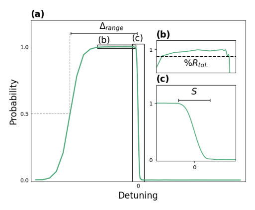
<figcaption class="paper-figure-caption"><b>Fig 2.</b> Figure 3. ATM pulse evolution resulting detuning dependent transition probabilities. (a) Probability P = |⟨↑|ψ(τT , ∆)⟩|2</figcaption>
</figure>
<figure class="paper-figure-card">
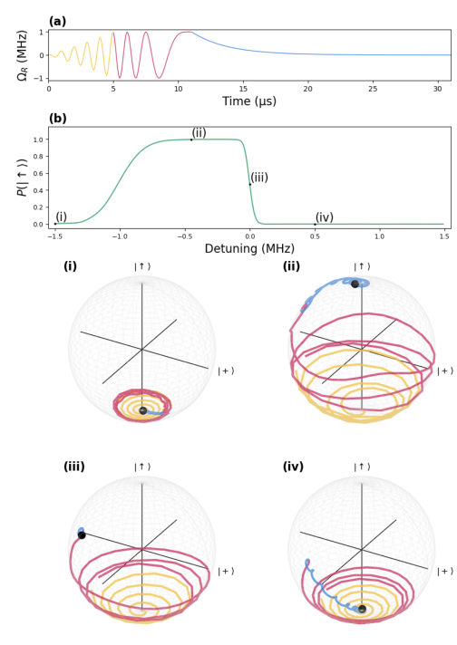
<figcaption class="paper-figure-caption"><b>Fig 3.</b> Figure 2. (a) Temporal profile of ATM pulse (see Appendix E for pulse parameters), divided into its three sequential seg- ments: rise (τr, yellow), constant (τc, red), and fall (τf, blue).(b) Resulting transition probability as a function of de- tuning, highlighting four key detuning points labeled (i–iv). (i–iv) Bloch sphere representations of the qubit state in the ro- tating frame at the detuning values indicated in (b). The color of each trajectory denotes the pulse segment during which the corresponding state evolution occurs, as defined in panel (a).</figcaption>
</figure>
<figure class="paper-figure-card">
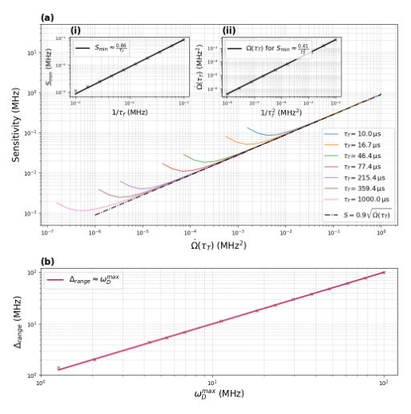
<figcaption class="paper-figure-caption"><b>Fig 4.</b> Figure 4. (a) Simulated ATM fall pulse sensitivity S as a function of the fall gradient ˙Ω(τT ) for different fall times τf,</figcaption>
</figure>
<figure class="paper-figure-card">
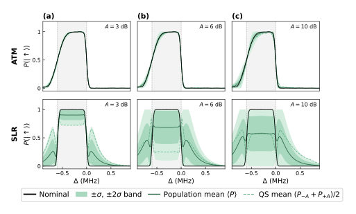
<figcaption class="paper-figure-caption"><b>Fig 5.</b> Figure 5. Monte Carlo analysis of robustness to quasistatic Rabi-amplitude noise for the ATM pulse (see Appendix E for pulse parameters; top row) and the Shinnar-Le Roux (SLR) inversion pulse (bottom row). Columns (a)–(c) correspond to amplitude noise Ω→Ωnom 10δ/20, with δ ∈[−AdB, +AdB] and AdB = 3, 6, and 10 dB, respectively. The black curve shows the nominal response (δ = 0), the solid green curve shows the averaged population ⟨P⟩, and the shaded regions indicate the ±σ and ±2σ regions obtained from N = 512 it- erations. The dashed green curve shows the quasistatic end- point estimate (P−A + P+A)/2. Vertical dotted lines indicate the nominal ranges. The SLR response is frequency-shifted...</figcaption>
</figure>
</div>

<p><strong>Summary.</strong> The paper introduces the Adiabatic Tangentially-Modulated (ATM) pulse as an advanced technique for single-shot qubit frequency tracking, overcoming limitations found in standard methods like Ramsey interferometry. By leveraging quantum adiabatic theory, the ATM pulse creates a highly sensitive, sigmoidal response that allows precise measurement of detuning with low noise. This makes it a promising tool for robust, real-time stabilization of qubits against environmental noise.</p>
<p><strong>Why it may be interesting.</strong> This work provides a concrete, theoretically grounded protocol for improving quantum measurement fidelity in noisy environments. The ability to engineer sensitivity and bandwidth independently is highly valuable for experimentalists working on solid-state qubits where noise mitigation is paramount.</p>
<details>
<summary>Detailed structure</summary>
<p><strong>Main problem.</strong> The primary goal is to develop a single-shot, high-fidelity method for tracking frequency noise in two-level quantum systems that overcomes the fundamental trade-offs inherent in conventional measurement techniques like Ramsey interferometry.</p>
<p><strong>Main result.</strong> The proposed Adiabatic Tangentially-Modulated (ATM) pulse achieves sensitivity comparable to multi-shot averaging while maintaining a lower closed-loop white-noise floor and exhibiting superior robustness against amplitude fluctuations compared to existing protocols.</p>
<p><strong>Method.</strong> The authors derived the ATM pulse using quantum adiabatic theory, designing its time evolution ($\Omega(t)$ and $\omega_D(t)$) such that it maps continuous detuning values onto a highly selective, near-binary response.</p>
<p><strong>Model / system.</strong> The system modeled is a two-level quantum system (qubit), whose dynamics are governed by a time-dependent Hamiltonian in the rotating frame. The protocol involves applying the specially shaped ATM pulse sequence to probe the qubit's detuning ($\Delta$).</p>
<p><strong>Key observables.</strong> Detuning-dependent transition probability $P(\Delta)$, sensitivity ($S$), closed-loop noise floor ($P_{	ext{floor}, N}$), and operational detuning range ($\Delta_{	ext{range}}$).</p>
<p><strong>Important parameters / regimes.</strong> Pulse parameters include rise time ($   au_r$), constant time ($ au_c$), fall time ($ au_f$), and the final gradient $\dot{\Omega}(	au_T)$. Sensitivity scales inversely with the square root of the pulse's rate of change.</p>
<p><strong>Assumptions / limitations.</strong> The method assumes that the adiabatic condition can be maintained during most of the protocol while allowing controlled non-adiabatic transitions at specific points to achieve the desired readout contrast.</p>
<p><strong>Figures summary.</strong> Figures illustrate the temporal profiles of amplitude and frequency modulation for the ATM pulse, show the geometric evolution on the Bloch sphere corresponding to different detuning regimes, and compare the noise power spectral density (PSD) between ATM and Ramsey tracking methods.</p>
<p><strong>Paper structure.</strong> The paper establishes the problem limitations with conventional techniques, introduces the ATM pulse derived from adiabatic theory, details its mathematical formulation and physical interpretation via Bloch sphere evolution, presents quantitative comparisons of sensitivity and noise floors against Ramsey methods, and concludes by summarizing the practical advantages for real-time stabilization.</p>
</details>
<details>
<summary>Abstract</summary>
<p>Understanding and mitigating noise in two level quantum systems is essential for achieving high fidelity qubit control. Conventional frequency tracking techniques, such as Ramsey interferometry, are fundamentally limited by trade offs between sensitivity, bandwidth, and dynamic range. Here we introduce the adiabatic tangentially-modulated (ATM) pulse, a pulse derived from quantum adiabatic theory that maps qubit detuning onto a sigmoidal, near-binary response. Using numerical simulations supported by analytical modelling, we show that pulse sensitivity and detuning range can be independently engineered through simple design parameters. We derive scaling relations governing these quantities and demonstrate their agreement with simulation. A single shot ATM measurement achieves sensitivity comparable to that obtained from multi-shot Ramsey averaging, enabling tracking of substantially higher frequency noise components with a lower closed-loop white-noise floor. In addition, this pulse exhibits strong robustness to amplitude fluctuations compared with binary response pulses derived from the Shinnar-Le Roux formalism. Together, these properties establish the ATM pulse as a promising approach for robust qubit frequency tracking.</p>
</details>
<p><sub><a href="#top">↑ back to top</a></sub></p>

<p><a id="paper-2608.06562"></a></p>
<h3 id="detecting-quantumness-with-generalized-loschmidt-echoes"><a href="http://arxiv.org/abs/2608.06562v1">Detecting quantumness with generalized Loschmidt echoes</a></h3>
<p><strong>Authors:</strong> Cecilia Cormick, Adrián A. Budini<br>
<strong>Type:</strong> theory · <strong>Category:</strong> statistical mechanics · <strong>PDF:</strong> <a href="https://arxiv.org/pdf/2608.06562v1">https://arxiv.org/pdf/2608.06562v1</a><br>
<strong>Analysis basis:</strong> full PDF text, analyzed in chunks
<strong>Topic relevance:</strong> <code>analog quantum simulation</code> <strong>2/5</strong> · <code>methods for driven-dissipative</code> <strong>2/5</strong> · <code>non-equilibrium dynamics</code> <strong>2/5</strong> · <code>Keldysh / 2PI / non-Gaussian methods</code> <strong>1/5</strong> · <code>correlated / nonlocal dissipation</code> <strong>1/5</strong> · <code>driven-dissipative phase transition</code> <strong>1/5</strong> · <code>entanglement &amp; information structure</code> <strong>1/5</strong> · <code>non-equilibrium universality</code> <strong>1/5</strong></p>
<div class="figure-strip-hint">↔ Scroll figures horizontally</div>
<div class="paper-figures-scroll">
<figure class="paper-figure-card">
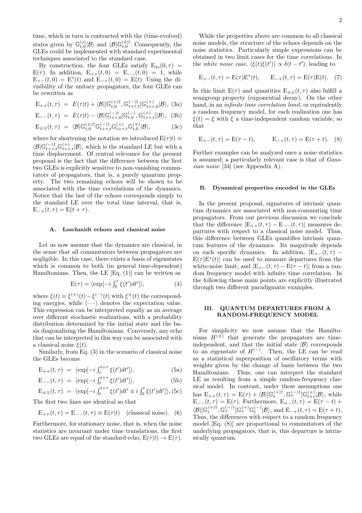
<figcaption class="paper-figure-caption"><b>Fig 1.</b> Low-resolution page preview, page 2</figcaption>
</figure>
<figure class="paper-figure-card">
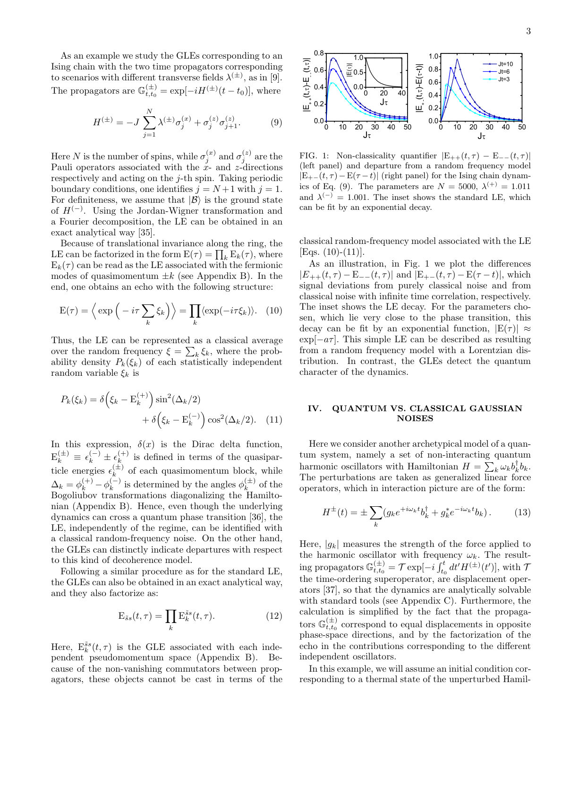
<figcaption class="paper-figure-caption"><b>Fig 2.</b> Low-resolution page preview, page 3</figcaption>
</figure>
<figure class="paper-figure-card">

<figcaption class="paper-figure-caption"><b>Fig 3.</b> Low-resolution page preview, page 4</figcaption>
</figure>
<figure class="paper-figure-card">

<figcaption class="paper-figure-caption"><b>Fig 4.</b> Low-resolution page preview, page 5</figcaption>
</figure>
<figure class="paper-figure-card">

<figcaption class="paper-figure-caption"><b>Fig 5.</b> Low-resolution page preview, page 6</figcaption>
</figure>
</div>

<p><strong>Summary.</strong> The paper introduces Generalized Loschmidt Echoes (GLEs) as a powerful theoretical tool to quantify 'quantumness' by testing the non-commutativity of time evolution propagators. By comparing these echoes against predictions derived from classical random noise models, the authors successfully demonstrate a method to isolate and measure intrinsic quantum effects in systems like spin chains and harmonic oscillators.</p>
<p><strong>Why it may be interesting.</strong> This work provides a rigorous, measurable diagnostic tool rooted in echo physics to distinguish true quantum dynamics from classical noise or semiclassical approximations in complex many-body systems.</p>
<details>
<summary>Detailed structure</summary>
<p><strong>Main problem.</strong> The primary goal is to develop a method using generalized Loschmidt echoes (GLEs) to detect intrinsic non-classical dynamical behavior, or 'quantumness,' in various quantum systems.</p>
<p><strong>Main result.</strong> GLEs provide a diagnostic tool whose deviation from predictions based on classical random-frequency noise models quantifies the presence of genuine quantum features, even in regimes previously thought to be classical.</p>
<p><strong>Method.</strong> The authors generalize Loschmidt echoes by involving four forward/backward time propagators. Quantumness is diagnosed by checking for non-commutativity among these evolution propagators.</p>
<p><strong>Model / system.</strong> The analysis applies the method to two main models: the quantum Ising spin chain (critical dynamics) and non-interacting quantum harmonic oscillators, allowing comparison with classical Gaussian noise predictions.</p>
<p><strong>Key observables.</strong> Generalized Loschmidt Echoes ($    ilde{E}^{ss}(t,     au)$), and specific differences between echo combinations like $|E^{++}(t, 	au) - E^{--}(t, 	au)|$ which quantify non-classicality.</p>
<p><strong>Important parameters / regimes.</strong> Time separation ($t, 	au$), coupling constants ($\lambda$, $J$), spectral density parameters ($A, \gamma$), and temperature/inverse temperature ($eta$).</p>
<p><strong>Assumptions / limitations.</strong> The detection of quantumness relies on the assumption that classical dynamics correspond to commuting evolution propagators. Calculations often involve taking continuous limits or high-temperature approximations.</p>
<p><strong>Figures summary.</strong> Figures plot non-classicality quantifiers for both Ising chain and bosonic dynamics, showing how these measures decay relative to standard Loschmidt echo decays.</p>
<p><strong>Paper structure.</strong> The paper introduces GLEs as an extension of LEs. It then applies this framework to calculate echoes for the Ising model (via Jordan-Wigner transformation) and harmonic oscillators (using spectral density methods), culminating in explicit formulas for quantum signatures.</p>
</details>
<details>
<summary>Abstract</summary>
<p>Loschmidt echoes are a well-established method to characterize dynamical properties such as quantum chaos and sensitivity to perturbations. Here we present a straightforward generalization that identifies non-classical dynamical behavior. The generalized echoes involve four forward-backward time propagators. If these propagators do not commute, one can readily identify signatures of this property in the relations between echoes. As an example, detection of intrinsic non-commuting quantum features is analyzed in critical dynamics of a spin chain. Interestingly, this phenomenon is also observed for Gaussian dynamics and high temperature limits which are generally regarded as classical.</p>
</details>
<p><sub><a href="#top">↑ back to top</a></sub></p>

<p><a id="paper-2608.06597"></a></p>
<h3 id="cascading-through-the-hierarchy-regularizer-induced-feature-detection-as-phase-transitions-in-deep-linear-neural-networks"><a href="http://arxiv.org/abs/2608.06597v1">Cascading Through the Hierarchy: Regularizer-Induced Feature Detection as Phase Transitions in Deep Linear Neural Networks</a></h3>
<p><strong>Authors:</strong> Björn Ladewig, Ibrahim Talha Ersoy, Karoline Wiesner<br>
<strong>Type:</strong> theory · <strong>Category:</strong> disordered systems and neural networks · <strong>PDF:</strong> <a href="https://arxiv.org/pdf/2608.06597v1">https://arxiv.org/pdf/2608.06597v1</a><br>
<strong>Analysis basis:</strong> full PDF text, analyzed in chunks
<strong>Topic relevance:</strong> <code>driven-dissipative phase transition</code> <strong>2/5</strong> · <code>non-equilibrium universality</code> <strong>2/5</strong> · <code>Frenkel-Kontorova</code> <strong>1/5</strong> · <code>Keldysh / 2PI / non-Gaussian methods</code> <strong>1/5</strong> · <code>analog quantum simulation</code> <strong>1/5</strong> · <code>non-equilibrium dynamics</code> <strong>1/5</strong></p>
<div class="figure-strip-hint">↔ Scroll figures horizontally</div>
<div class="paper-figures-scroll">
<figure class="paper-figure-card">

<figcaption class="paper-figure-caption"><b>Fig 1.</b> FIG. 1: (a) Qualitative summary of the main features of the regularized loss landscape for &gt; 1 hidden layers and small regularization strength; (b) level crossing (marked by dotted vertical lines) at the level of the loss inducing first order transitions; (c) bifurcation (indicated by dashed vertical lines) at the level of the mean squared error; (d) example of the Hessian spectrum for 2 hidden layers. For (b-d): η1 = 0.95, η2 = 0.55, η3 = 0.3.</figcaption>
</figure>
<figure class="paper-figure-card">

<figcaption class="paper-figure-caption"><b>Fig 2.</b> FIG. 2: Path through the loss landscape, based on Hessian eigendirections revealing a basin structure in the unregularized (β →0) loss landscape for 2 hidden layers featuring one global minimum and multiple saddle points (7) that partly correspond to rank-restricted optima. With: Σxx = 13×3, Σyx = diag(0.95, 0.55, 0.3).</figcaption>
</figure>
<figure class="paper-figure-card">

<figcaption class="paper-figure-caption"><b>Fig 3.</b> FIG. 3: (a, c) Minimal loss L∗and MSE for 1 hidden layer (top) and 2 hidden layers (bottom). Colored dashed parts correspond to the loss/MSE for a reversed annealing protocol. (b,d) Basin structure in the regularized loss landscape for deep linear networks with 1 hidden layer (top) - featuring one minimum; and 2 hidden layers (bottom) - featuring multiple minima - for different regularization strengths β. Vertical lines indicate critical regularization strengths (in case of 1st order transitions there are two, see main text).</figcaption>
</figure>
<figure class="paper-figure-card">

<figcaption class="paper-figure-caption"><b>Fig 4.</b> FIG. 4: Effective loss landscapes (1 hidden layer) for η1 = 0.95, η2 = 0.55, η3 = 0.3; the right most plot shows the minima σ∗ i of the effective potentials (16) as a function of β, displaying the continuous onset at critical regularization strengths β∗ i .</figcaption>
</figure>
<figure class="paper-figure-card">

<figcaption class="paper-figure-caption"><b>Fig 5.</b> FIG. 5: Hessian spectra for 1 hidden (a,b) and 2 hidden layers (c,d) with din = dout = dhidden = 3 and η1 = 0.95, η2 = 0.55, η3 = 0.3 based on numerical simulations (reversed annealing) and analytical prediction: (a) Hessian spectra for 1 hidden layer and different, fixed β: (i) rmax(β) = 0 (square); (ii) rmax(β) = 3 (circle); (b) Hessian spectrum as a function of β. (c) Hessian spectra for 2 hidden layers and different, fixed β for (i) rmax(β) = 0 (diamond), (ii) rmax(β) = 1 (square) and (iii) rmax(β) = rmax (circle); (d) Hessian spectrum as a function of β.</figcaption>
</figure>
</div>

<p><strong>Summary.</strong> This paper develops a statistical physics framework to understand deep learning by treating the regularization strength as an external field controlling phase transitions. Using analytically solvable linear neural networks, the authors rigorously connect observed feature detection cascades to the underlying geometry of the loss landscape via Hessian spectrum analysis. It provides powerful theoretical tools for interpreting network training dynamics through the lens of critical phenomena.</p>
<p><strong>Why it may be interesting.</strong> The explicit mapping of deep learning phenomena (feature detection) onto established concepts like phase transitions and Hessian spectra provides a powerful theoretical analogy for understanding complex many-body systems or critical points in other physical models.</p>
<details>
<summary>Detailed structure</summary>
<p><strong>Main problem.</strong> The paper develops a scientific theory of deep learning by connecting its learning dynamics and statistical properties to concepts from statistical physics, specifically investigating how regularization induces phase transitions.</p>
<p><strong>Main result.</strong> It establishes a rigorous link between cascades of phase transitions, the learnable features detected by the network, and the underlying geometry characterized by the Hessian spectrum. The analysis provides analytic predictions for these transitions using order parameters derived from an effective free energy description.</p>
<p><strong>Method.</strong> The authors employ analytical techniques to study analytically solvable toy models (Deep Linear Neural Networks), treating the regularization strength as a tunable external field analogous to statistical physics Hamiltonians.</p>
<p><strong>Model / system.</strong> The system is Deep Linear Neural Networks (DLN) trained with Mean Squared Error loss and $L_2$ weight decay regularization. The analysis focuses on the dynamics of the weights, relating macroscopic behavior to the microscopic geometry of the loss landscape via the Hessian spectrum.</p>
<p><strong>Key observables.</strong> Phase transitions, order parameters related to learned features, and the eigenvalues/spectrum of the Jacobian/Hessian matrix.</p>
<p><strong>Important parameters / regimes.</strong> Regularization strength ($eta$), network depth ($n$), and data covariance matrices ($\Sigma_{xx}, \Sigma_{yx}$).</p>
<p><strong>Assumptions / limitations.</strong> The analysis is restricted to deep linear models (DLN) and often assumes zero mean for simplicity. The connection between the macroscopic effective description and microscopic Hessian spectrum provides the core theoretical framework.</p>
<p><strong>Figures summary.</strong> Figures illustrate the qualitative structure of the regularized loss landscape, showing level crossings indicative of first-order transitions, bifurcation points, and examples of the Hessian spectrum across different network depths.</p>
<p><strong>Paper structure.</strong> The paper progresses by establishing the connection between learning dynamics and statistical physics. It analyzes the critical point structure for DLNs using regularization strength as a control parameter, deriving order parameters from the loss function's effective potential (Landau theory). Finally, it tackles the microscopic details by analyzing the Jacobian/Hessian spectrum to confirm these macroscopic predictions.</p>
</details>
<details>
<summary>Abstract</summary>
<p>A scientific theory of deep learning, comprising learning dynamics and statistical properties of learned models, is rapidly gaining attention. One of the corner stones of this development are analytically solvable toy models, allowing for the fully tractable analysis of the learning dynamics. Here we analytically investigate such a toy model using the regularization strength as a tunable external parameter - akin to external fields in statistical physics. In previous studies, (i) an onset of learning transition was predicted analytically and (ii) it was phenomenologically/numerically established that tuning the regularization strength can result in a cascade of phase transitions. The number of those transitions was linked to the geometry of the loss landscape determined by the model complexity. Setting up a rigorous framework underpinning the previous numerical observations, our investigation reveals a precise connection between those cascades of phase transitions, learnable features and the underlying geometry. We provide analytic predictions of these phase transitions as well as tractable order parameters related to learned features. At the level of the minimal model, we connect this macroscopic perspective (that can be condensed into an effective description) to the microscopic perspective in terms of the geometry of the loss landscape characterized by the Hessian spectrum. Thus, the presented model provides a platform to explore and sharpen advances made in the scientific theory of deep learning rooted in statistical physics concepts.</p>
</details>
<p><sub><a href="#top">↑ back to top</a></sub></p>

<p><a id="paper-2608.07109"></a></p>
<h3 id="learning-a-quantitative-criterion-for-distinguishing-chaos-from-noise"><a href="http://arxiv.org/abs/2608.07109v1">Learning a quantitative criterion for distinguishing chaos from noise</a></h3>
<p><strong>Authors:</strong> Jaesung Choi, Athokpam Langlen Chanu, Jong-Min Park<br>
<strong>Type:</strong> both · <strong>Category:</strong> statistical mechanics · <strong>PDF:</strong> <a href="https://arxiv.org/pdf/2608.07109v1">https://arxiv.org/pdf/2608.07109v1</a><br>
<strong>Analysis basis:</strong> full PDF text, analyzed in chunks
<strong>Topic relevance:</strong> <code>non-equilibrium dynamics</code> <strong>2/5</strong> · <code>analog quantum simulation</code> <strong>1/5</strong> · <code>correlated / nonlocal dissipation</code> <strong>1/5</strong> · <code>driven-dissipative phase transition</code> <strong>1/5</strong> · <code>entanglement &amp; information structure</code> <strong>1/5</strong> · <code>methods for driven-dissipative</code> <strong>1/5</strong> · <code>non-equilibrium universality</code> <strong>1/5</strong></p>
<div class="figure-strip-hint">↔ Scroll figures horizontally</div>
<div class="paper-figures-scroll">
<figure class="paper-figure-card">

<figcaption class="paper-figure-caption"><b>Fig 1.</b> FIG. 1. Schematic representation of the cross-prediction reservoir computing (RC) framework. Step 1 (left panel) corresponds to the RC-based prediction model, and Step 2 (right panel) corresponds to the classification criterion. The reservoir receives a scalar input through fixed input weights Win and evolves through a fixed recurrent weight matrix Wres. Only the output weights Wout are trained via ridge regression to predict the target.</figcaption>
</figure>
<figure class="paper-figure-card">

<figcaption class="paper-figure-caption"><b>Fig 2.</b> FIG. 2. Scatter plot of the true and predicted values obtained using the proposed method. Blue, magenta, and yellow circles correspond to the Lorenz system, flicker noise, and uniform noise, respectively.</figcaption>
</figure>
<figure class="paper-figure-card">

<figcaption class="paper-figure-caption"><b>Fig 3.</b> FIG. 3. Scatter plots obtained using the conventional (a) value-to-value and (b) difference-to-difference prediction schemes. Magenta and yellow circles correspond to flicker noise and uniform noise, respectively.</figcaption>
</figure>
<figure class="paper-figure-card">

<figcaption class="paper-figure-caption"><b>Fig 4.</b> FIG. 5. Comparison of ∆xt (gray) with the correspond- ing predictions ∆ˆxt (colored) for the following synthetic noise processes: (a) Gaussian noise, (b) uniform noise, (c) Cauchy noise, (d) flicker noise, (e) fractional Brownian motion, and (f) fractional Gaussian noise. Plotting conventions as in Fig. 4.</figcaption>
</figure>
<figure class="paper-figure-card">

<figcaption class="paper-figure-caption"><b>Fig 5.</b> FIG. 4. Comparison of the first-difference time series ∆xt obtained from numerical simulations (gray) with the corre- sponding predictions ∆ˆxt (colored) for the following synthetic chaotic systems: (a) logistic map, (b) skew tent map, (c) two- age-classes model, (d) Chua’s circuit, (e) Lorenz system, (f) R¨ossler system, and (g) NF-κB model. The main panels show 500-sample segments. The insets show scatter plots of ∆ˆxt versus ∆xt, with the predicted and true values on the verti- cal and horizontal axes, respectively. Both axes in each inset span the same range as the vertical axis of the corresponding main panel.</figcaption>
</figure>
</div>

<p><strong>Summary.</strong> This work introduces a novel reservoir computing framework combined with a cross-prediction scheme to quantitatively distinguish chaos from noise in time-series data. By training the model to predict future changes, it generates a correlation coefficient ($R^2$) that serves as a simple diagnostic tool. This method proves robust across synthetic and empirical datasets, offering a powerful tool for analyzing complex physical measurements.</p>
<p><strong>Why it may be interesting.</strong> While not directly quantum, the methodology relies heavily on analyzing complex, non-equilibrium dynamics in observable time series. The use of advanced machine learning (RC) to extract underlying deterministic structure from noisy data has parallels with reconstructing quantum states or identifying hidden order parameters in many-body systems.</p>
<details>
<summary>Detailed structure</summary>
<p><strong>Main problem.</strong> The core challenge is developing a quantitative, data-driven method to reliably distinguish between deterministic chaotic time series and stochastic noise, as both exhibit irregular fluctuations.</p>
<p><strong>Main result.</strong> The authors propose that using the squared Pearson correlation coefficient ($R^2$) derived from a cross-prediction scheme within reservoir computing provides a simple and robust criterion: $R^2 > 0.5$ suggests chaos, while $R^2 < 0.5$ suggests noise.</p>
<p><strong>Method.</strong> A purely data-driven approach using Reservoir Computing (RC) trained to predict the <em>change</em> ($\Delta x_{t+1}$) of a variable from its current state ($x_t$). The cross-prediction scheme is key to suppressing spurious correlations inherent in noisy data.</p>
<p><strong>Model / system.</strong> The method applies to general scalar time series data, tested on diverse synthetic chaotic systems (e.g., Lorenz, LogMap) and various noise processes (e.g., Gaussian, Flicker, fGn). Empirical tests include physiological signals (VOICE, RR intervals) and climate indices (NAO index).</p>
<p><strong>Key observables.</strong> The squared Pearson correlation coefficient ($R^2$) between the true future change ($\Delta x_{t+1}$) and the predicted future change ($\hat{\Delta x}_{t+1}$).</p>
<p><strong>Important parameters / regimes.</strong> Hyperparameters for RC (e.g., leak rate $a_{	ext{leak}}$) are optimized; classification thresholds include $R^2 > 0.5$ for chaos.</p>
<p><strong>Assumptions / limitations.</strong> The method assumes that deterministic chaotic dynamics impose a measurable, non-stochastic structure on the local changes ($\Delta x$), which can be captured by the RC framework better than random noise processes.</p>
<p><strong>Figures summary.</strong> Figures illustrate the schematic of the RC prediction/classification process, show scatter plots comparing true vs. predicted values for various systems (Lorenz, Flicker), and summarize $R^2$ performance across multiple synthetic chaos and noise datasets.</p>
<p><strong>Paper structure.</strong> The paper introduces the problem, details the reservoir computing framework with cross-prediction, presents results on diverse synthetic time series to establish the criterion, discusses robustness against real-world data limitations, and concludes by applying the method to a wide range of empirical physical and biological datasets.</p>
</details>
<details>
<summary>Abstract</summary>
<p>Distinguishing chaos from noise using time-series data is fundamentally challenging because both exhibit irregular fluctuations and share many statistical and dynamical characteristics. Existing methods face two key limitations: temporally correlated noise can yield spurious signatures of chaos, and analyses of scalar time series often require explicit choices of embedding parameters. Here, we propose a purely data-driven method for distinguishing chaos and noise based on a reservoir-computing framework with a cross-prediction scheme. In the proposed approach, the model is trained to predict the future change of a variable from its current value, thereby combining a short-term predictability test with a test of the smoothness of deterministic flows. The recurrent structure of reservoir computing enables effective prediction of high-dimensional chaotic dynamics even from scalar time series without explicit delay-coordinate reconstruction, while the cross-prediction framework strongly suppresses spurious predictive correlations arising from noise. We apply the proposed method to diverse synthetic and empirical time series. Chaotic systems consistently yield strong correlations between the true and predicted future changes, whereas noise processes remain clearly separated in a low-correlation regime. The method also exhibits substantial robustness to practical limitations in empirical data, including measurement noise, limited data length, and increasing prediction lag. These results demonstrate that the squared Pearson correlation coefficient provides a simple quantitative criterion for distinguishing chaos from noise directly from observed time-series data.</p>
</details>
<p><sub><a href="#top">↑ back to top</a></sub></p>

<p><a id="paper-2608.07194"></a></p>
<h3 id="statistical-stability-of-random-potentials-to-thermal-and-quantum-activation"><a href="http://arxiv.org/abs/2608.07194v1">Statistical stability of random potentials to thermal and quantum activation</a></h3>
<p><strong>Authors:</strong> Luis Filsinger, Roland Willa<br>
<strong>Type:</strong> theory · <strong>Category:</strong> statistical mechanics · <strong>PDF:</strong> <a href="https://arxiv.org/pdf/2608.07194v1">https://arxiv.org/pdf/2608.07194v1</a><br>
<strong>Analysis basis:</strong> full PDF text, analyzed in chunks
<strong>Topic relevance:</strong> <code>Keldysh / 2PI / non-Gaussian methods</code> <strong>2/5</strong> · <code>non-equilibrium dynamics</code> <strong>2/5</strong> · <code>correlated / nonlocal dissipation</code> <strong>1/5</strong> · <code>driven-dissipative phase transition</code> <strong>1/5</strong> · <code>methods for driven-dissipative</code> <strong>1/5</strong> · <code>non-equilibrium universality</code> <strong>1/5</strong></p>
<div class="figure-strip-hint">↔ Scroll figures horizontally</div>
<div class="paper-figures-scroll">
<figure class="paper-figure-card">

<figcaption class="paper-figure-caption"><b>Fig 1.</b> FIG. 1. Temperature-dependence of the expected thermal activation frequency ⟨Ω⟩(in units of the attempt frequency ω0) of a particle placed in a minimum of the Gaussian ran- dom potential. Temperature is given in the characteristic unit ET /kB, with ET =  3|G(2)|2|G(4)|3</figcaption>
</figure>
<figure class="paper-figure-card">

<figcaption class="paper-figure-caption"><b>Fig 2.</b> FIG. 2. Mass-dependent probability ⟨|T |2⟩for a quan- tum particle to tunnel away from a metastable minimum of a Gaussian random potential. The particle’s mass m is given in units of ℏ2µQ/2, where µQ ≡  512(|G(2)||G(6)|−|G(4)|2)4</figcaption>
</figure>
<figure class="paper-figure-card">

<figcaption class="paper-figure-caption"><b>Fig 3.</b> FIG. 3. Probability distributions p(u0, u2), p(u1, u3), p(u2, u3) for different densities np = Np/L of Lorentzian defects, in a system of length L = 100ξ, see Eq. (31). The plot range ±5 p</figcaption>
</figure>
</div>

<p><strong>Summary.</strong> This paper develops a rigorous statistical theory to analyze how random potential landscapes affect particle dynamics via thermal activation or quantum tunneling. By mapping the problem onto integrals over Gaussian random coefficients, the authors derive formulas linking measurable escape rates directly back to the underlying statistical properties (like the Green's function) of the disorder itself.</p>
<p><strong>Why it may be interesting.</strong> This work provides a powerful statistical framework for characterizing disordered media by measuring macroscopic dynamic responses, which is highly relevant for understanding energy barriers in complex quantum systems beyond simple mean-field treatments.</p>
<details>
<summary>Detailed structure</summary>
<p><strong>Main problem.</strong> The study investigates the statistical stability of complex, random potential energy landscapes (potential potentials) when subjected to thermal fluctuations or quantum tunneling.</p>
<p><strong>Main result.</strong> The authors derive algebraic expressions for calculating the expectation values of escape rates (thermal and quantum) based on the statistical properties of the potential's local derivatives. They establish a direct link between these activation behaviors and the underlying Green's function characterizing the random potential.</p>
<p><strong>Method.</strong> The core method involves reducing functional integrals over Gaussian random potentials to algebraic integrals over the expansion coefficients $\{u_n\}$ using derived probability density functions. Analysis includes calculating area fractions and asymptotic scaling laws for escape rates.</p>
<p><strong>Model / system.</strong> The model is a point particle moving in a complex, disordered potential landscape $U(x)$, motivated by systems like superconducting vortices trapped by defects. The randomness of the potential is assumed to follow a Gaussian functional distribution characterized by its two-point correlation function.</p>
<p><strong>Key observables.</strong> Statistical probability distributions of potential derivatives ($p(u_0, u_2)$), thermal activation rate ($\langle\Omega
angle$), and quantum tunneling rate ($\langle|T|^2
angle$).</p>
<p><strong>Important parameters / regimes.</strong> Temperature ($T$) or inverse temperature ($eta$), characteristic energy scale ($E_0$), and defect density parameters ($n_p\xi$).</p>
<p><strong>Assumptions / limitations.</strong> The potential is modeled by a Gaussian random functional distribution, allowing the reduction of complex integrals to algebraic forms. The analysis often truncates the potential expansion after low-order derivatives.</p>
<p><strong>Figures summary.</strong> Figures illustrate the probability density functions $p(u_0, u_2)$, $p(u_1, u_3)$, and $p(u_2, u_3)$ for various defect densities, showing convergence to analytic results in the Gaussian limit.</p>
<p><strong>Paper structure.</strong> The paper builds from defining the statistical problem using potential expansions, deriving the algebraic tools via Gaussian statistics, applying these tools to calculate specific observables (area fractions, $\langle\Omega
angle$, $\langle|T|^2
angle$), and finally analyzing the asymptotic behavior in different physical limits.</p>
</details>
<details>
<summary>Abstract</summary>
<p>In numerous physical, chemical, and biological systems the dynamics can be reduced to the motion of state variables in a complex potential landscape. In case the manifold is known, the motion and response of the embedded object can be described deterministically up to stochastic effects usually associated with a noise. In contrast, if the manifold is unknown, the static and dynamic response of the state variable may be used as a spectroscopic tool to characterize the potential landscape. Inspired by a seminal work of L.\ Embon and co-workers, [Sci.\ Rep.\ \textbf{5}, 7598 (2015)] we investigate the statistical properties of potential minima, in particular, their stability to thermal and quantum activation. For Gaussian random manifolds, we derive an algebraic expression to evaluate the statistical probability of the potential character (value, slope, curvature, ...). With this tool, we compute the expectation value for the rate of thermal and quantum activation and link these findings to the principal characteristics of the Gaussian potential, i.e., its Green's function. This link provides the opportunity to access information on the potential's Green's function by studying the activation behavior of an object in this manifold.</p>
</details>
<p><sub><a href="#top">↑ back to top</a></sub></p>

<p><a id="paper-2608.06775"></a></p>
<h3 id="prominent-intrinsic-orbital-hall-effect-in-the-135-kagome-metal-family-and-orbital-responses-in-the-loop-current-phase"><a href="http://arxiv.org/abs/2608.06775v1">Prominent Intrinsic Orbital Hall Effect in the 135 Kagome Metal Family and Orbital Responses in the Loop-Current Phase</a></h3>
<p><strong>Authors:</strong> Jianxin Huang, Rina Tazai, Youichi Yamakawa, Hiroshi Kontani<br>
<strong>Type:</strong> theory · <strong>Category:</strong> strongly correlated electrons · <strong>PDF:</strong> <a href="https://arxiv.org/pdf/2608.06775v1">https://arxiv.org/pdf/2608.06775v1</a><br>
<strong>Analysis basis:</strong> full PDF text, analyzed in chunks
<strong>Topic relevance:</strong> <code>analog quantum simulation</code> <strong>2/5</strong> · <code>non-equilibrium dynamics</code> <strong>2/5</strong> · <code>Keldysh / 2PI / non-Gaussian methods</code> <strong>1/5</strong> · <code>entanglement &amp; information structure</code> <strong>1/5</strong> · <code>spintronics-quantum-optics interface</code> <strong>1/5</strong></p>
<div class="figure-strip-hint">↔ Scroll figures horizontally</div>
<div class="paper-figures-scroll">
<figure class="paper-figure-card">

<figcaption class="paper-figure-caption"><b>Fig 1.</b> FIG. 2: (a) (b) (c): Band structure of (a) CsV3Sb5 (n=31), (b) CsCr3Sb5 (n=34) and (c) CsTi3Bi5 (n=28). CsV3Sb5 presents the van Hove singularity near the Fermi level, while in CsTi3Bi5 the vHS is far from the Fermi level. CsCr3Sb5 exhibits flat bands. The orbital characters are represented by the triangular guide above the panels, whose vertices corre- spond to dxz/dyz, dxy/dx2−y2, and px/py components.</figcaption>
</figure>
<figure class="paper-figure-card">

<figcaption class="paper-figure-caption"><b>Fig 2.</b> FIG. 1: (a) Schematic figure of the orbital Hall effect. Under an external electric field, electrons with different orbital angu- lar momenta move to different sides, leading to the generation of an orbital current. (b) Crystal structure of CsV3Sb5. The same lattice structure applies to CsCr3Sb5 and CsTi3Bi5 with atomic replacement. (c) dxz +dyz orbital tight-binding model for CsV3Sb5. (d) Fermi surfaces of the CsV3Sb5 30 orbital tight-binding model derived from first-principles calculations. Kagome metals possess characteristic multiple Fermi surfaces composed of d- and p-orbitals.</figcaption>
</figure>
<figure class="paper-figure-card">

<figcaption class="paper-figure-caption"><b>Fig 3.</b> FIG. 4: (a) Fermi surfaces of CsTi3Bi5 at n = 28. The or- bital weights are represented by the triangular guide, whose vertices correspond to dxz/dyz, dxy/dx2−y2, and px/py com- ponents. (b)-(e) k-space distributions of the OHE Fermi- sea term OIIb xy (k). The values inside the panels indicate the Brillouin-zone integrals, 1 Nk P</figcaption>
</figure>
<figure class="paper-figure-card">

<figcaption class="paper-figure-caption"><b>Fig 4.</b> FIG. 3: (a) Filling-dependent OHE O− xy for the CsTi3Bi5, CsV3Sb5 and CsCr3Sb5 tight-binding models. Circles indi- cate the actual fillings for three materials. A large and posi- tive OHE in CsTi3Bi5 and the negative OHEs in CsV3Sb5 and CsCr3Sb5 are predicted. (b) (c) (d): Total OHE and its con- tributions from different orbital-angular-momentum channels (|lz p| = 1, |lz d| = 1 and |lz d| = 2) in (b) CsTi3Bi5, (c) CsV3Sb5 and (d) CsCr3Sb5. The vertical dashed line marks the actual filling for each material.</figcaption>
</figure>
<figure class="paper-figure-card">

<figcaption class="paper-figure-caption"><b>Fig 5.</b> FIG. 5: (a) Fermi surfaces of CsV3Sb5 at n = 31. The or- bital weights are represented by the triangular guide, whose vertices correspond to dxz/dyz, dxy/dx2−y2, and px/py com- ponents. (b)-(e) k-space distributions of the OHE Fermi- sea term OIIb xy (k). The values inside the panels indicate the Brillouin-zone integrals, 1 Nk P</figcaption>
</figure>
</div>

<p><strong>Summary.</strong> This work theoretically investigates the Orbital Hall Effect in kagome metals by decomposing its contribution across different electronic orbital channels. It predicts distinct OHE signs for various compounds, showing that hybridization dictates the net sign. Furthermore, it demonstrates how loop-current phases can induce measurable local orbital angular momentum responses.</p>
<p><strong>Why it may be interesting.</strong> While focused on solid-state transport, the detailed analysis of orbital degrees of freedom, Berry curvature contributions to transport coefficients, and emergent topological responses in correlated systems provides fundamental theoretical tools applicable to understanding exotic quantum states relevant to AMO physics (e.g., orbital entanglement).</p>
<details>
<summary>Detailed structure</summary>
<p><strong>Main problem.</strong> The study investigates electronic orbital degrees of freedom, specifically focusing on generating and controlling orbital currents via the Orbital Hall Effect (OHE) in kagome lattice metals.</p>
<p><strong>Main result.</strong> The OHE sign depends critically on the competition between contributions from different orbital sectors ($|	ext{l}_z^d|=2$ vs. $|	ext{l}_z|=1$), and loop-current phases can induce finite local atomic orbital angular momentum.</p>
<p><strong>Method.</strong> Calculations utilize a tight-binding model derived from first principles, employing the Kubo formula for transport properties and performing detailed orbital-sector decomposition analysis.</p>
<p><strong>Model / system.</strong> The study focuses on transition metal kagome-lattice metals ($  ext{CsTi}_3 ext{Bi}_5$, $   ext{CsV}_3  ext{Sb}_5$, $   ext{CsCr}_3 ext{Sb}_5$) modeled by a 30-orbital tight-binding Hamiltonian. The analysis is restricted to a 2D approximation and neglects spin-orbit coupling.</p>
<p><strong>Key observables.</strong> Orbital Hall Effect (OHE), local atomic orbital angular momentum, symmetric components of the orbital conductivity tensor, and orbital Berry curvature.</p>
<p><strong>Important parameters / regimes.</strong> Electron filling ($n$), hybridization strength between $p$ and $d$ orbitals, and the presence/absence of loop currents.</p>
<p><strong>Assumptions / limitations.</strong> Spin-orbit coupling (SOC) is neglected in this work, and the analysis relies on a 2D model approximation.</p>
<p><strong>Figures summary.</strong> Figures illustrate crystal structures, band dispersions showing element substitution effects, and momentum-space distributions ($k$-space) of the OHE Berry curvature for the three studied compounds.</p>
<p><strong>Paper structure.</strong> The paper first establishes the theoretical framework using orbital-sector decomposition to predict OHE signs across different kagome metals. It then analyzes how $p$-$d$ hybridization modulates this sign, concluding with an investigation into loop-current phases that induce local angular momentum and modify conductivity symmetry.</p>
</details>
<details>
<summary>Abstract</summary>
<p>The study of electronic orbital degrees of freedom, including the generation and control of orbital currents and orbital angular momentum, has emerged as a vibrant research field. Here, we study the orbital Hall effect (OHE), one of the key mechanisms for orbital current generation, in transition-metal kagome-lattice metals. We propose a large positive OHE in CsTi$_3$Bi$_5$ and negative OHEs in CsV$_3$Sb$_5$ and CsCr$_3$Sb$_5$ models. Orbital-sector decomposition shows that the $\vert l^z_d \vert=2$ $d$-orbital channel gives a positive contribution, whereas the $\vert l^z \vert=1$ $d$- and $p$-orbital channels can give negative contributions. Control calculations suggest a persistent orbital-sector sign tendency near the actual filling, while strong $p$-$d$ hybridization modulates the quantitative balance and total OHE sign. Thus, the compound and filling dependence of the OHE reflects both the sign tendency of each orbital sector and the hybridization-controlled balance among them. Furthermore, we investigate the loop-current phase of CsV$_3$Sb$_5$ and show that it induces finite local atomic orbital angular momentum. We also show that loop-current-related symmetry lowering allows finite symmetric components of the orbital conductivity tensor. This study provides a basis for exploring orbital currents and local orbital-angular-momentum responses in strongly correlated kagome metals.</p>
</details>
<p><sub><a href="#top">↑ back to top</a></sub></p>

<p><a id="paper-2608.06888"></a></p>
<h3 id="correlation-geometry-of-quantum-sensor-networks-local-global-information-flow-and-local-privacy"><a href="http://arxiv.org/abs/2608.06888v1">Correlation Geometry of Quantum Sensor Networks: Local-Global Information Flow and Local Privacy</a></h3>
<p><strong>Authors:</strong> Gong-Chu Li, Lei Chen, Xu-Song Hong, Hua-Qing Xu, Yuancheng Liu, Si-Qi Zhang, Jia-Hao Zhao, Geng Chen, Chuan-Feng Li, Guang-Can Guo<br>
<strong>Type:</strong> theory · <strong>Category:</strong> quantum information and computing · <strong>PDF:</strong> <a href="https://arxiv.org/pdf/2608.06888v1">https://arxiv.org/pdf/2608.06888v1</a><br>
<strong>Analysis basis:</strong> full PDF text, analyzed in chunks
<strong>Topic relevance:</strong> <code>entanglement &amp; information structure</code> <strong>2/5</strong> · <code>quantum measurements</code> <strong>2/5</strong> · <code>correlated / nonlocal dissipation</code> <strong>1/5</strong> · <code>non-equilibrium dynamics</code> <strong>1/5</strong></p>
<div class="figure-strip-hint">↔ Scroll figures horizontally</div>
<div class="paper-figures-scroll">
<figure class="paper-figure-card">

<figcaption class="paper-figure-caption"><b>Fig 1.</b> FIG. 1. Local–global information distribution in a QSN. Spa- tially separated sensor nodes (θ1, θ2, . . . , θN) are connected through a multipartite quantum probe state. Finite lo- cal resources fix the diagonal sensing capacities qi ≡Qii, while the blue columns represent the operational local EQ- FIs Ei. Network correlations redistribute metrological infor- mation between these local parameters and the global pa- rameter θw = P</figcaption>
</figure>
<figure class="paper-figure-card">

<figcaption class="paper-figure-caption"><b>Fig 2.</b> FIG. 2. Local–global phase map. (a) Global EQFI ver- sus the fractional local-EQFI loss, 1 −eEi = µ2 i , along the aligned branch sgn(µi) = sgn(si). Increasing the correlation enhances the global EQFI up to the optimum µ∗ i (trade-off zone). Beyond this optimum, both the local and global EQ- FIs decrease (over-correlated zone). Beyond the break-even point µBE i , the global EQFI falls below its decoupled value (sub-reference zone). In the match case |si| = ri, the over- correlated zone vanishes, and the optimum is approached at the singular endpoint. (b) Trade-off, over-correlated, and sub- reference zones in the (µi, si/ri) plane. Red diamonds mark the matched singular points, |si| = ri...</figcaption>
</figure>
<figure class="paper-figure-card">

<figcaption class="paper-figure-caption"><b>Fig 3.</b> FIG. 3. Nuisance-aware and directional QFIs in a permutation-invariant network. For N = 10, the normalized EQFI eEw (solid) and projected QFI eFw (dashed) are plotted against the local-information loss 1 −eEi. Colors indicate the weight-uniformity parameter eαS = 1, 0.99, ..., 0.95. The two quantities coincide for a uniform target (eαS = 1), but separate when eαS &lt; 1: eFw is monotonic and depends only weakly on eαS; whereas eEw reaches a finite optimum and then decreases, and sensitive to eαS.</figcaption>
</figure>
<figure class="paper-figure-card">

<figcaption class="paper-figure-caption"><b>Fig 4.</b> FIG. 1. Generic node–subnetwork phase map. (a) Signs of dEi/dµi, dEw/dµi, and dEw/dEi for si &gt; 0, ri &gt; 0, and si ̸= ri. (b) Corresponding parametric trajectory (Ei(µi), Ew(µi)). The aligned branch first enters the local–global trade-off regime, reaches its maximum at µ∗ i , and subsequently enters the overcorrelated regime.</figcaption>
</figure>
<figure class="paper-figure-card">

<figcaption class="paper-figure-caption"><b>Fig 5.</b> FIG. 2. Matched singular boundary. For |si| = ri, the aligned branch terminates at Ei = 0 and Ew = 1/A̸i. The overcorrelated regime is absent, and the global target remains estimable at the singular endpoint.</figcaption>
</figure>
</div>

<p><strong>Summary.</strong> This work introduces the Effective Quantum Fisher Information (EQFI) to quantify estimation precision in multi-parameter quantum sensor networks. It develops a phase map revealing that excessive quantum correlations can paradoxically degrade both local and global measurement capabilities. The methodology provides principled guidelines for engineering network states to achieve high global sensitivity while ensuring individual parameters remain locally private.</p>
<p><strong>Why it may be interesting.</strong> It provides a rigorous geometric framework for understanding how quantum correlations can either enhance or actively degrade sensing performance, offering design principles for optimal network states.</p>
<details>
<summary>Detailed structure</summary>
<p><strong>Main problem.</strong> The paper characterizes the trade-off between local and global estimation precision in quantum sensor networks while accounting for nuisance parameters.</p>
<p><strong>Main result.</strong> It establishes a fundamental bottleneck, the 'barrel effect,' bounding global Fisher information by the weakest weighted local sensing capacity, and identifies conditions for achieving intrinsic local privacy.</p>
<p><strong>Method.</strong> The authors develop an exact Effective Quantum Fisher Information (EQFI)-based phase map to geometrically describe how quantum correlations redistribute metrological information between local and global estimates.</p>
<p><strong>Model / system.</strong> The system is a general N-node Quantum Sensor Network (QSN) whose estimation precision is governed by the multiparameter Quantum Fisher Information Matrix (QFIM).</p>
<p><strong>Key observables.</strong> Effective Quantum Fisher Information (EQFI), Global EQFI ($E_w$), Local EQFI ($E_i$), and correlation parameters ($\mu_i, s_i, r_i$).</p>
<p><strong>Important parameters / regimes.</strong> The optimal correlation strength $\mu^*_i$ defining the transition from beneficial to detrimental correlations.</p>
<p><strong>Assumptions / limitations.</strong> The analysis assumes the QFIM is nonsingular for core derivations; local privacy is defined as a QFIM-level non-identifiability condition.</p>
<p><strong>Figures summary.</strong> Figures illustrate the information flow, mapping the trade-off between local and global EQFI across different correlation regimes, including an over-correlated penalty zone.</p>
<p><strong>Paper structure.</strong> The paper progresses by introducing EQFI, developing the phase map to analyze the local-global trade-off (including the 'barrel effect'), and finally applying this geometry to derive conditions for intrinsic local privacy.</p>
</details>
<details>
<summary>Abstract</summary>
<p>Quantum sensor networks typically encode N unknown parameters while targeting a single linear combination, rendering the N-1 remaining parameters as nuisance directions. To rigorously quantify estimation precision under such nuisances, we introduce the concept of effective quantum Fisher information (EQFI) and develop an exact EQFI-based phase map that systematically describes the allocation between local and global EQFI. Leveraging this geometric framework, we identify a fundamental bottleneck termed the "barrel effect": the global EQFI is strictly bounded by the weakest weighted local sensing capacity among all nodes. We further establish concrete conditions for saturating this bound. Crucially, this geometric map delineates how the trade-off between local and global EQFI depends dynamically on quantum correlations, and uncovers a counterintuitive "overcorrelated" regime where excessive correlations actively degrade both local and global performance. Finally, we apply the phase map to intrinsic local privacy and identify the condition under which every local parameter is inaccessible while the desired global combination remains estimable. Overall, our work provides a principled methodology for engineering optimal network states in quantum sensing architectures.</p>
</details>
<p><sub><a href="#top">↑ back to top</a></sub></p>

<p><a id="paper-2608.07127"></a></p>
<h3 id="niobium-titanium-nitride-as-a-high-tensile-stress-material-for-nanomechanics"><a href="http://arxiv.org/abs/2608.07127v1">Niobium Titanium Nitride as a High Tensile Stress Material for Nanomechanics</a></h3>
<p><strong>Authors:</strong> Korbinian Rubenbauer, Burak E. Bülbüloglu, Thomas Luschmann, Manuel Müller, Stephan Geprägs, Witlef Wieczorek, Eva M. Weig, Matthias Althammer, Hans Huebl<br>
<strong>Type:</strong> experiment · <strong>Category:</strong> other · <strong>PDF:</strong> <a href="https://arxiv.org/pdf/2608.07127v1">https://arxiv.org/pdf/2608.07127v1</a><br>
<strong>Analysis basis:</strong> full PDF text, analyzed in chunks
<strong>Topic relevance:</strong> <code>QC/QI experiment</code> <strong>2/5</strong> · <code>analog quantum simulation</code> <strong>1/5</strong> · <code>correlated cavity matter</code> <strong>1/5</strong> · <code>quantum optics experiment</code> <strong>1/5</strong> · <code>spintronics-quantum-optics interface</code> <strong>1/5</strong></p>
<div class="figure-strip-hint">↔ Scroll figures horizontally</div>
<div class="paper-figures-scroll">
<figure class="paper-figure-card">

<figcaption class="paper-figure-caption"><b>Fig 1.</b> FIG. 1. Device Layout and Schematics. (a) Scanning elec- tron microscope (SEM) image of one of the examined series of nanostrings. The length of the nanostring increases from 20 µm to 90 µm as indicated by the number adjacent to each string. (b) SEM image of a 30 µm long, 500 nm wide, and 142 nm thin NbTiN suspended nanostring, which is clamped by two square pads with 10 µm side lengths. (c) Schematic of a nanostring, defining the string length l, width w, and thick- ness h.</figcaption>
</figure>
<figure class="paper-figure-card">

<figcaption class="paper-figure-caption"><b>Fig 2.</b> FIG. 2. Room Temperature Characterization. (a) Op- tical spectroscopy measurement. A typical normalized spec- trum (blue dots) of a 40 µm long string is fitted with Eq. (1). From the fit, we extract a resonance frequency of Ω(1) m /2π = 2.886 687 MHz and linewidth of Γ(1) m /2π = 154 Hz. (b) Inverse length (1/l) dependence of the first harmonic Ω(1) m . Each point is an average over data obtained for multiple strings of the same length. The standard deviation is within the point size. Using the high tensile stress approximation of Eq. (2), we ob- tain a tensile stress of σ = (0.56 ± 0.03) GPa. (c) Young’s modulus E from the higher harmonics of an exemplary 90 µm long string as a function of...</figcaption>
</figure>
<figure class="paper-figure-card">

<figcaption class="paper-figure-caption"><b>Fig 3.</b> FIG. 4. Mechanical linewidth and (intrinsic) quality factors. (a) Length dependence of the mechanical linewidth Γm. Average values between different strings of the same length are displayed together with their standard deviation as error bars. An decrease of the loss rate with increasing length is observed. (b) Mechanical quality factor Qm = Ωm/Γm as a function of the string length. Average values between differ- ent strings of the same length are shown together with their standard deviation as error bars. We observe a roughly linear increase of the mechanical quality with length. (c) Intrinsic quality factor Qintr as a function of temperature T, obtained by fitting Eq. (5) to Qm(l). The...</figcaption>
</figure>
</div>

<p><strong>Summary.</strong> This work characterizes Niobium Titanium Nitride (NbTiN) as a promising material for advanced nanomechanical resonators intended for use with superconducting circuits. By measuring resonance frequencies using optical interferometry, the authors determined that NbTiN possesses high tensile stress and good mechanical quality factors across relevant cryogenic temperatures. This establishes it as a viable platform for future cavity electro- and nanomechanics applications.</p>
<p><strong>Why it may be interesting.</strong> While primarily mechanical/materials science, the focus on superconducting integration and high-quality factor resonators makes it relevant to quantum optomechanics and circuit QED platforms where material limitations are key bottlenecks.</p>
<details>
<summary>Detailed structure</summary>
<p><strong>Main problem.</strong> The goal is to develop novel, high-performance material platforms for nanomechanical resonators that can be integrated with superconducting circuits.</p>
<p><strong>Main result.</strong> Niobium Titanium Nitride (NbTiN) was characterized as a promising material due to its favorable mechanical properties, including high tensile stress ($\sim 0.81 	ext{ GPa}$) and a measurable intrinsic quality factor ($Q_{	ext{intr}}$ up to $850$).</p>
<p><strong>Method.</strong> Mechanical properties were determined by fabricating doubly clamped nanostrings and measuring their resonance frequencies using optical interferometry across varying temperatures.</p>
<p><strong>Model / system.</strong> The physical system is a thin film of NbTiN used as a nanostring resonator. Analysis involves fitting the measured resonance frequency ($\Omega$) dependence on string length ($l$) or harmonic order ($n$) to extract elastic constants and stress.</p>
<p><strong>Key observables.</strong> Tensile stress ($\sigma$), Young's modulus ($E$), intrinsic mechanical quality factor ($Q_{	ext{intr}}$), and thermal expansion coefficient ($\alpha$).</p>
<p><strong>Important parameters / regimes.</strong> High tensile stress up to $0.81 	ext{ GPa}$; Young's modulus of $\sim 181 	ext{ GPa}$; operating temperature range down to $13 	ext{ K}$.</p>
<p><strong>Assumptions / limitations.</strong> The analysis heavily relies on the high tensile stress approximation for relating resonance frequency to mechanical parameters, and comparisons between different fitting models (e.g., fundamental mode vs. higher harmonics) reveal discrepancies.</p>
<p><strong>Figures summary.</strong> Figures show SEM images of nanostrings; characterization plots display resonance peaks ($\Omega$ vs $1/l$), the temperature dependence of $\sigma$, $E$, and $Q_{	ext{intr}}$, and comparisons between different fitting models for stress extraction.</p>
<p><strong>Paper structure.</strong> The paper progresses from establishing the need for new superconducting nanomechanical materials to presenting experimental measurements using optical interferometry. It then details the analysis methods used to extract elastic constants ($\sigma, E$) and quality factors ($Q_{	ext{intr}}$) as functions of temperature and geometry.</p>
</details>
<details>
<summary>Abstract</summary>
<p>Over the past decades, high-coherence mechanical resonators have been continuously pushed to new limits, using techniques such as dissipation dilution and clamp-tapering to enhance their quality factor beyond intrinsic material limitations. Today, these mechanical resonators are often fabricated from silicon-nitride, silicon-carbide or aluminum. Recently, however, interest in novel material platforms has grown, especially those allowing for the integration within superconducting circuits. Among these, superconducting nitrides stand out as particularly promising due to their high transition temperatures compared to elementary superconductors. Here, we introduce them as nanomechanical resonators and report on the fabrication and characterization of highly stressed, doubly clamped niobium titanium nitride (NbTiN) nanostring resonators. Using optical interferometry, we determine the elastic properties and mechanical quality factor from room temperature to 13 K. We observe high tensile stress up to 0.81 GPa along with a Young's modulus of 181 GPa and an intrinsic mechanical quality factor up to 850. With these favorable mechanical properties, NbTiN constitutes a promising material platform for future applications in cavity electro- and nanomechanics.</p>
</details>
<p><sub><a href="#top">↑ back to top</a></sub></p>
<hr>
<p>
<a href="index.html">← Index</a>
 · <a href="papers_02.html">← Previous</a> · <a href="papers_04.html">Next →</a>
</p>
<hr>

</body>
</html>
